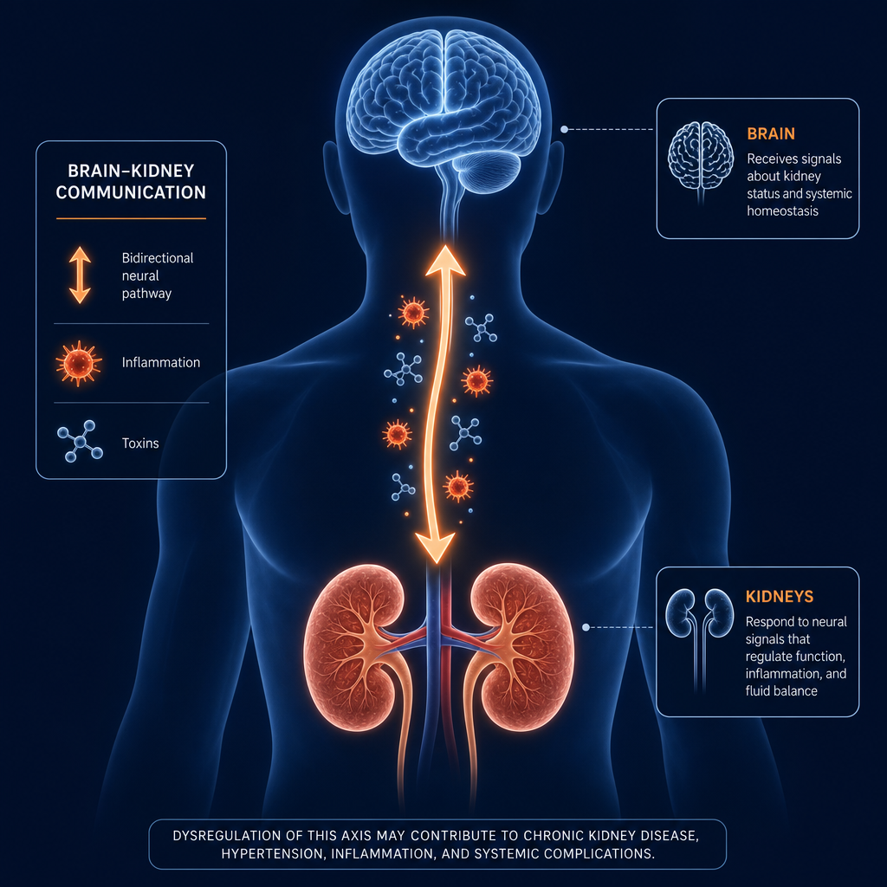
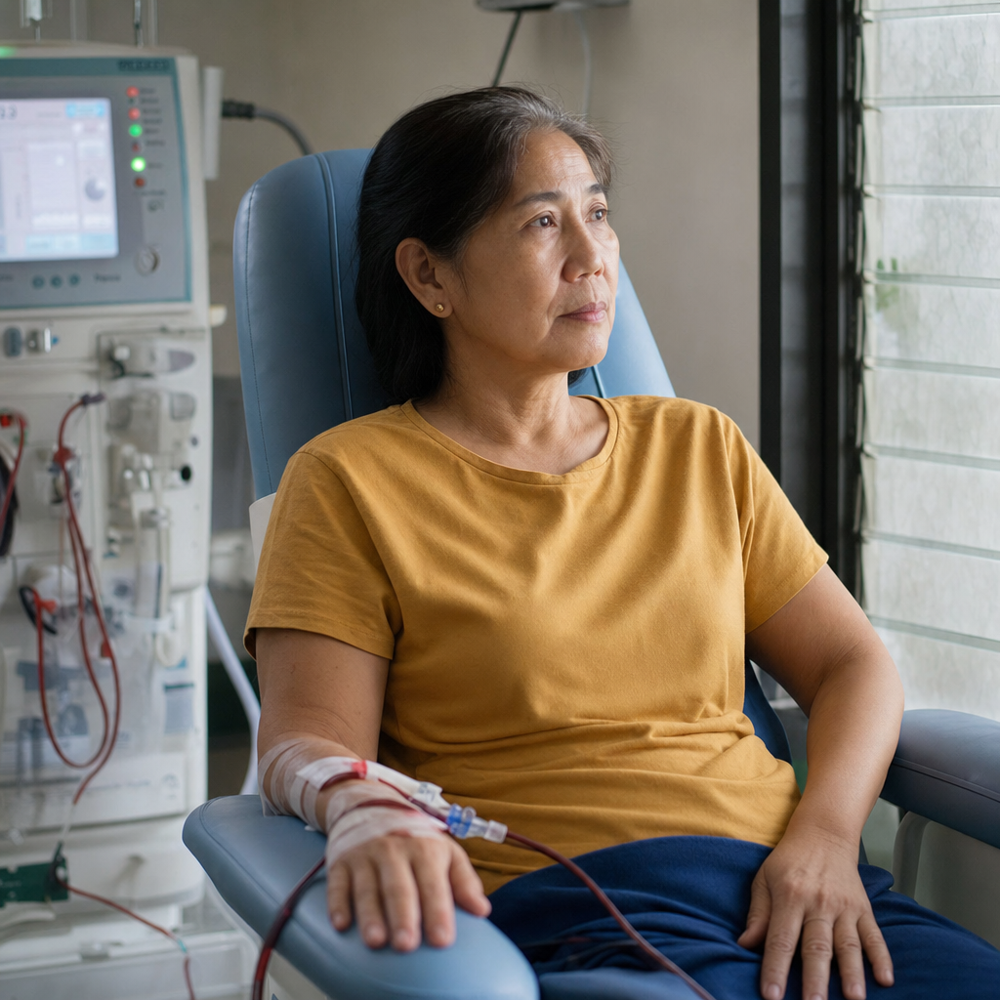
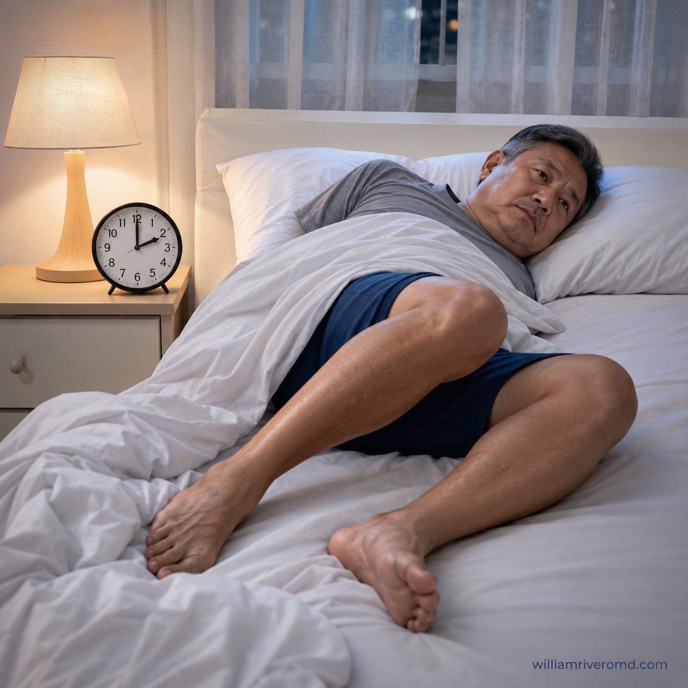
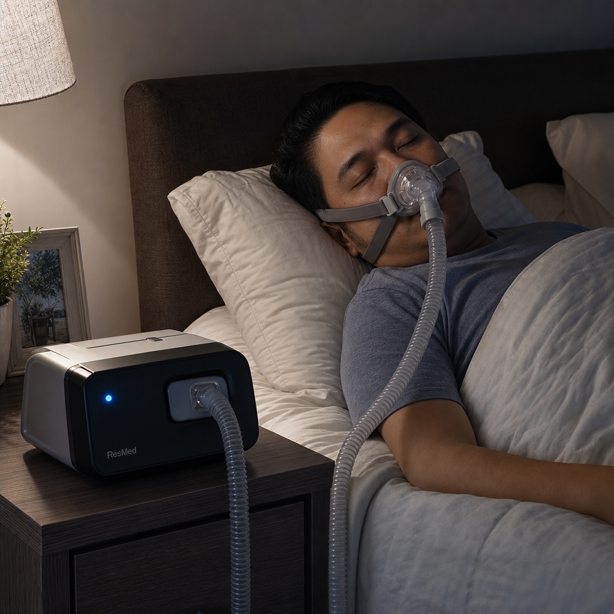
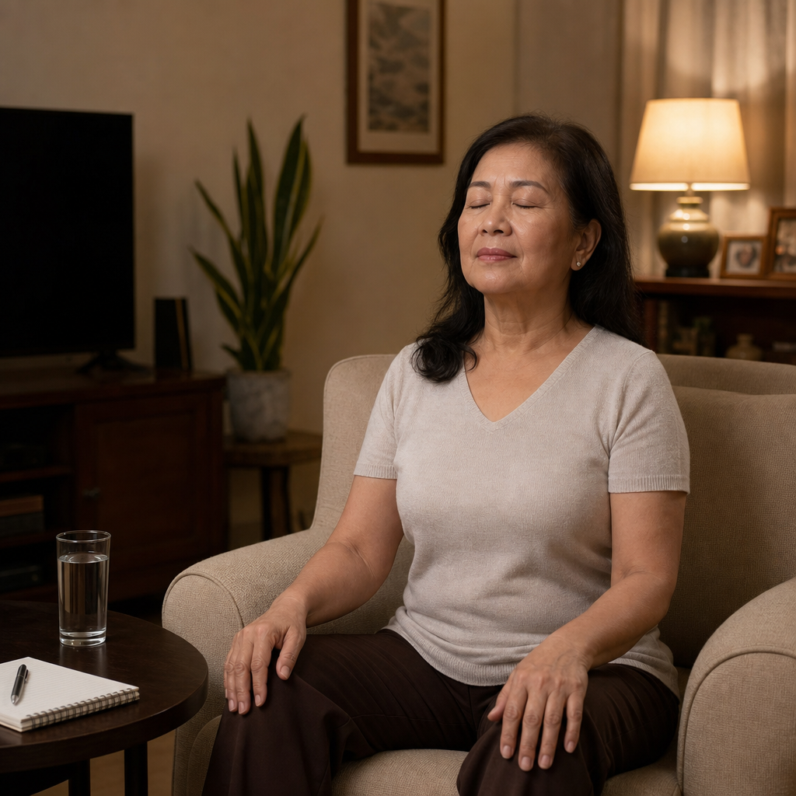

Why CKD Affects Your Mind**Bakit Apektadu ning CKD ing Isip Mu** Nung atin kang Chronic Kidney Disease (CKD), e mu lang katawan mu ing apektadu—pati ing isip mu. Dakal a tau a ating CKD ing makaramdam king problema king panag-isip da, king mood da, at king ugali da. Importanti ingaintindian mu kung bakit malyari iti at nukarin ka makapaniap saup. **Deng Basan (Kidneys) at ing Utak** Deng basan mu gagampanan dang maragul a obra para king utak mu. Nung e la sasalese masalese, malyaring: - Mag-build up deng toxins king daya mu a makaapektu king paralan ning panag-isip mu - Magkasakit ka king anemia (mababa ing red blood cells), a makapagawang mapagal ka at makiramdam kang malat - Mag-develop ka king high blood pressure a makapasira king malating ugat-daya king utak mu - Magkamali ing balance da ring electrolytes mu, a makaapektu king paralan ning pamaggana ning nerve cells mu **Karaniwang Problema king Isip** Dakal a tau a ating CKD ing makaranas king: - Masakit makapag-concentrate o makapag-focus - Problema king panuglung-tulung (memory) - Makiramdam king lungkut o depression - Anxiety o pamag-alala tungkul king karelangan da - Masakit matudtud o manatiling matudtud **Nukang Makakua Saup** Nung makaramdam ka king alin man kareting sintomas, makipagsalita ka king doctor mu. Atin dang malyaring idagdag king treatment plan mu: - Deng gamut a makatulung king mood at panag-isip - Counseling o therapy - Deng paralan ning pamag-relax at pamangasiwa king stress - Deng adjustment king dialysis schedule mu, nung kailangan E ka managuliran a maniap saup. Ing pamamalika king mental health mu kasanting la ka importante karing pamamalika king basan mu. Bakit Nakaka-apekto ang CKD sa Inyong Isipan Ngano ang CKD Nakaapekto sa Imong Hunahuna
Depression, anxiety, poor sleep, and cognitive difficulties are not just reactions to difficult news — they are direct biological consequences of kidney disease. Uremic toxins, hormonal disruption, anemia, inflammation, and dialysis itself all alter brain chemistry. Treating your mental health and sleep is treating your kidney disease.Ang depresyon, pagkabalisa, mahinang tulog, at kahirapan sa pag-iisip ay hindi lamang reaksyon sa masamang balita — ito ay direktang biological na kahihinatnan ng sakit sa bato. Ang mga uremic toxin, pagkagambala ng hormona, anemia, pamamaga, at ang dialysis mismo ay lahat nagbabago ng chemistry ng utak. Ang paggamot ng inyong kalusugang pangisip at tulog ay paggamot ng inyong sakit sa bato.Ang depresyon, kahadlok, mahinay nga pagtulog, ug kahirapan sa pag-iisip dili lang reaksyon sa masamang balita — kini direktang biological nga sangputanan sa sakit sa bato. Ang mga uremic toxin, pagkaguba sa hormona, anemia, pamamaga, ug ang dialysis mismo nagbabag-o tanan sa chemistry sa utok. Ang pagtambal sa imong kalusugan sa pangisip ug pagtulog pagtambal sa imong sakit sa bato. Ing depresyon, pagkabalisa, mahinang tulog, at kahirapan king pag-iisip ya ali lamang reaksyon king masamang balita — ini ya direktang biological a kahihinatnan ning sakit king batu. Ing deng uremic toxin, pagkagambala ning hormona, anemia, pamamaga, at ing dialysis mismo ya amin nagbabago ning chemistry ning utak. Ing paggamut ning inyu kalusugang pangisip at tulog ya paggamut ning inyu sakit king batu.

The kidney–brain axis: failing kidneys allow uremic toxins, inflammatory signals, and hormonal disruption to alter brain chemistry — directly causing depression, cognitive decline, and sleep disorders.Ang kidney–brain axis: ang mga nabibigong bato ay nagpapahintulot sa mga uremic toxin, inflammatory na signal, at hormonal na pagkagambala na baguhin ang chemistry ng utak — direktang nagdudulot ng depresyon, pagbaba ng kakayahang mag-isip, at mga karamdaman sa tulog.Ang kidney–brain axis: ang mga nabibigong bato nagpahintulot sa mga uremic toxin, inflammatory nga signal, ug hormonal nga pagkaguba sa pagbag-o sa chemistry sa utok — direktang nagdulot sa depresyon, pagkunhod sa kakayahan sa panghunahuna, ug mga sakit sa pagtulog. Ing kidney–brain axis: ing deng nabibigong batu ya nagpapahintulot king deng uremic toxin, inflammatory a signal, at hormonal a pagkagambala a baguhin ing chemistry ning utak — direktang nagdudulot ning depresyon, pagbaba ning kakayahang mag-isip, at deng karamdaman king tulog.
How CKD Harms the Brain — The BiologyPaano Nakakasama ang CKD sa Utak — Ang BiyolohiyaUnsaon sa CKD Pagpasakit sa Utok — Ang Biyolohiya Paano Nakakasama ing CKD king Utak — Ing Biyolohiya
Uremic ToxinsMga Uremic ToxinMga Uremic Toxin Deng Uremic Toxin
As kidneys fail to filter, toxins like indoxyl sulfate and p-cresol cross the blood-brain barrier, disrupting neurotransmitter function and triggering neuroinflammation — directly causing cognitive decline, fatigue, and mood disturbance.Habang nabibigo ang mga bato na magsala, ang mga toxin tulad ng indoxyl sulfate at p-cresol ay tumatawid sa blood-brain barrier, ginagambala ang neurotransmitter function at nagti-trigger ng neuroinflammation — direktang nagdudulot ng pagbaba ng kakayahan sa pag-iisip, pagod, at pagbabago ng mood.Samtang ang mga bato napakyas sa pagsala, ang mga toxin sama sa indoxyl sulfate ug p-cresol nagtabok sa blood-brain barrier, nagguba sa neurotransmitter function ug nagpahinabo og neuroinflammation — direktang nagdulot og pagkubos sa pag-iisip, pagod, ug pagbabag-o sa mood. Habang nabibigo ing deng batu a magsala, ing deng toxin tulad ning indoxyl sulfate at p-cresol ya tumatawid king blood-brain barrier, ginagambala ing neurotransmitter function at nagti-trigger ning neuroinflammation — direktang nagdudulot ning pagbaba ning kakayahan king pag-iisip, pagod, at pagbabago ning mood.
Anemia & Brain HypoxiaAnemia at Kakulangan ng Oxygen sa UtakAnemia ug Kakulang sa Oxygen sa Utok Anemia at Kakulangan ning Oxygen king Utak
Reduced erythropoietin from damaged kidneys causes anemia. The brain is acutely sensitive to oxygen deprivation — even mild anemia (Hgb 9–10 g/dL) causes fatigue, poor concentration, irritability, and depressed mood.Ang nabawasang erythropoietin mula sa nasirang mga bato ay nagdudulot ng anemia. Ang utak ay lubhang sensitibo sa kakulangan ng oxygen — kahit ang banayad na anemia (Hgb 9–10 g/dL) ay nagdudulot ng pagod, mahinang konsentrasyon, pagkamayamot, at deprimidong mood.Ang nabawasan nga erythropoietin gikan sa nasirang mga bato nagdulot og anemia. Ang utok labaw ka sensitibo sa kakulang sa oxygen — bisan ang banayad nga anemia (Hgb 9–10 g/dL) nagdulot og pagod, mahinay nga konsentrasyon, pagkamayamuton, ug napig nga mood. Ing nabawasang erythropoietin mula king nasirang deng batu ya nagdudulot ning anemia. Ing utak ya lubhang sensitibo king kakulangan ning oxygen — kahit ing banayad a anemia (Hgb 9–10 g/dL) ya nagdudulot ning pagod, mahinang konsentrasyon, pagkamayamot, at deprimidong mood.
Chronic InflammationTalamak na PamamagaKronikong Pamamaga Talamak a Pamamaga
CKD drives persistent elevation of IL-6, TNF-α, and CRP. These inflammatory cytokines directly suppress serotonin and dopamine synthesis — the neurotransmitters that regulate mood, motivation, and pleasure.Ang CKD ay nagdudulot ng patuloy na pagtaas ng IL-6, TNF-α, at CRP. Ang mga inflammatory cytokine na ito ay direktang pinipigilan ang paggawa ng serotonin at dopamine — ang mga neurotransmitter na nag-aayos ng mood, motibasyon, at kasiyahan.Ang CKD nagdulot og padayon nga pagtaas sa IL-6, TNF-α, ug CRP. Kining mga inflammatory cytokine direktang nagpugong sa paghimo og serotonin ug dopamine — ang mga neurotransmitter nga nag-regulate sa mood, motibasyon, ug kalipay. Ing CKD ya nagdudulot ning patuloy a pagtaas ning IL-6, TNF-α, at CRP. Ing deng inflammatory cytokine a ini ya direktang pinipigilan ing paggawa ning serotonin at dopamine — ing deng neurotransmitter a nag-aayos ning mood, motibasyon, at kasiyahan.
Hormonal DisruptionPagkagambala ng HormonaPagkaguba sa Hormona Pagkagambala ning Hormona
Disrupted calcium, phosphorus, and PTH alter nerve excitability and sleep architecture. Reduced testosterone and thyroid function — common in CKD — further compound fatigue, depression, and sexual dysfunction.Ang nagagambala na calcium, phosphorus, at PTH ay nagbabago ng excitability ng nerve at arkitektura ng tulog. Ang nabawasang testosterone at function ng thyroid — karaniwan sa CKD — ay lalo pang nagpapalala ng pagod, depresyon, at sexual dysfunction.Ang naguba nga calcium, phosphorus, ug PTH nagbabag-o sa excitability sa nerve ug arkitektura sa pagtulog. Ang nabawasan nga testosterone ug function sa thyroid — kasagaran sa CKD — labi pang nagpalala sa pagod, depresyon, ug sexual dysfunction. Ing nagagambala a calcium, phosphorus, at PTH ya nagbabago ning excitability ning nerve at arkitektura ning tulog. Ing nabawasang testosterone at function ning thyroid — karaniwan king CKD — ya lalo pang nagpapalala ning pagod, depresyon, at sexual dysfunction.
The Burden of IllnessAng Bigat ng SakitAng Pabug-at sa Sakit Ing Bigat ning Sakit
Dietary restrictions, fluid limits, multiple medications, frequent clinic visits, fear of progression, financial stress, and loss of independence all create a chronic psychological burden that is real, valid, and treatable.Ang mga paghihigpit sa pagkain, limitasyon sa likido, maraming gamot, madalas na pagbisita sa klinika, takot sa pagsulong ng sakit, pinansyal na stress, at pagkawala ng kalayaan ay lahat naglikha ng talamak na psychological na bigat na totoo, may bisa, at nararamdaman.Ang mga pagdili sa pagkaon, limitasyon sa likido, daghang tambal, kanunay nga pagbisita sa klinika, kahadlok sa pagsulong sa sakit, pinansyal nga stress, ug pagkawala sa kagawasan naghimo tanan og kronikong psychological nga pabug-at nga tinuod, balido, ug matambal. Ing deng paghihigpit king pamangan, limitasyon king likido, dacal a gamut, madalas a pagbisita king klinika, takot king pagsulong ning sakit, pinansyal a stress, at pagkaala ning kalayaan ya amin naglikha ning talamak a psychological a bigat a totoo, atin bisa, at nararamdaman.
The Sleep–Mood CycleAng Ikot ng Tulog at MoodAng Ikot sa Pagtulog ug Mood Ing Ikot ning Tulog at Mood
Poor sleep worsens depression. Depression worsens sleep. In CKD, both are amplified by uremic pruritus, restless legs, nocturia, fluid shifts overnight, and dialysis-day schedule disruption — a self-reinforcing cycle.Ang mahinang tulog ay nagpapalala ng depresyon. Ang depresyon ay nagpapalala ng tulog. Sa CKD, ang dalawa ay pinapalaki ng uremic pruritus, restless legs, nocturia, pagbabago ng likido sa gabi, at pagkagambala ng iskedyul ng dialysis — isang siklong nagpapatibay sa sarili.Ang mahinay nga pagtulog nagpalala sa depresyon. Ang depresyon nagpalala sa pagtulog. Sa CKD, ang duha gipadako sa uremic pruritus, restless legs, nocturia, pagbabag-o sa likido sa gabii, ug pagkaguba sa iskedyul sa dialysis — usa ka ikot nga nagpalig-on sa iyang kaugalingon. Ing mahinang tulog ya nagpapalala ning depresyon. Ing depresyon ya nagpapalala ning tulog. King CKD, ing dalawa ya pinapalaki ning uremic pruritus, restless legs, nocturia, pagbabago ning likido king gabi, at pagkagambala ning iskedyul ning dialysis — metung a siklong nagpapatibay king sarili.
Depression in CKD# Depresyun king CKD Ing depresyun metung yang pangkaraniwang problema karing taung atin CKD (chronic kidney disease). Maralas deng taung maki sakit king batu da magkasakit mu naman king isip da. ## Nanu ing depresyun? Ing depresyun metung yang sakit king isip a makapagparanas keka king: - Lungkut a makatanggal - Kawalan ning gana o interes karing dati mung gagawan - Kapagalan o kakulangan ning lakas - Kasakitan magtudtud o maragul a tudtud - Kasakitan mag-concentrate o mag-isip - Kawalan ning gana mangan o maragul a gana mangan - Pakiramdam a ala kang kwenta o atin kang kasalanan ## Obat bakit mas maragul ing chance ning depresyun karing CKD patients? - Stress king pamaniaman king sakit - Pagbabago king pamangabie (lifestyle) - Kasakitan mag-obra o magawa deng dating gagawan - Side effects da reng gamut - Pagbabago king katawan ## Nanu ing dapat mung gawan nung atin kang depresyun? - Makisabi ka king doctor o healthcare provider mu - E ka managulat maki-help - Malyari rang i-refer ka king psychiatrist o psychologist - Atin gamut (antidepressants) a ligtas para karing CKD patients - Ing counseling o therapy makatulung mu naman ## Kailan ka dapat magpa-check? Nung ing lungkut o stress mu manatili nang mahigit 2 weeks, o nung atin kang maisip a e mayap para king sarili mu, makisabi ka agad king doctor mu. Ing pamaniaman king depresyun importanti mu naman antimo ing pamaniaman king CKD mu. E ka managulat maki-help — atin remedyu. Depresyon sa CKD Depresyon sa CKD
Depression in CKD is not weakness, self-pity, or a character flaw. It is a medical condition with biological drivers — and it is undertreated in up to 75% of affected patients. Untreated depression in CKD is independently associated with faster kidney disease progression, higher hospitalization rates, and premature death.Ang depresyon sa CKD ay hindi kahinaan, pagmamahal sa sarili, o depekto ng karakter. Ito ay isang medikal na kondisyon na may biological na mga dahilan — at ito ay hindi sapat na nararamdaman sa hanggang 75% ng mga apektadong pasyente. Ang hindi natutugunang depresyon sa CKD ay independyenteng nauugnay sa mas mabilis na pagsulong ng sakit sa bato, mas mataas na rate ng pagpasok sa ospital, at maagang pagkamatay.Ang depresyon sa CKD dili kahuyang, pagmahigugmaon sa kaugalingon, o depekto sa karakter. Kini usa ka medikal nga kondisyon nga adunay biological nga mga dahilan — ug kini kulang natambal sa hangtod 75% sa mga apektadong pasyente. Ang wala natambal nga depresyon sa CKD independyenteng nalangkit sa mas paspas nga pagsulong sa sakit sa bato, mas taas nga rate sa pag-ospital, ug sayo nga kamatayon. Ing depresyon king CKD ya ali kahinaan, pagmamahal king sarili, o depekto ning karakter. Ini ya metung a medikal a kondisyon a atin biological a deng dahilan — at ini ya ali sapat a nararamdaman king anggang 75% ning deng apektadong pasyente. Ing ali natutugunang depresyon king CKD ya independyenteng nauugnay king mas mabilis a pagsulong ning sakit king batu, mas matas a rate ning pagpasok king ospital, at maagang pagkamatay.

Depression during dialysis is common and underrecognized. The quiet emotional weight of CKD — loss of independence, altered routines, uncertain prognosis — is a real medical burden that deserves treatment, not just acceptance.Ang depresyon sa panahon ng dialysis ay karaniwan at hindi sapat na nakikilala. Ang tahimik na emosyonal na bigat ng CKD ay isang tunay na medikal na pasanin na karapat-dapat sa paggamot.Ang depresyon sa panahon sa dialysis kasagaran ug kulang makita. Ang hilom nga emosyonal nga kaumol sa CKD usa ka tinuod nga medikal nga pabug-at nga karapat-dapat sa pagtambal. Ing depresyon king panahon ning dialysis ya karaniwan at ali sapat a nakikilala. Ing tahimik a emosyonal a bigat ning CKD ya metung a tunay a medikal a pasanin a karapat-dapat king paggamut.
Recognizing Depression — Common Symptoms in CKD PatientsPagkilala sa Depresyon — Mga Karaniwang Sintomas sa mga Pasyenteng CKDPag-ila sa Depresyon — Mga Kasagarang Sintomas sa mga Pasyente nga CKD Pagkilala king Depresyon — Deng Karaniwang Sintomas king deng Pasyenteng CKD
- Persistent sadness, emptiness, or hopelessness lasting more than 2 weeksPatuloy na kalungkutan, kawalang-laman, o kawalan ng pag-asa na tumatagal nang higit sa 2 linggoPadayon nga kagul-anan, kawalay-sulod, o kawalan sa paglaum nga molungtad og labaw sa 2 ka semana Patuloy a kalungkutan, kawalang-laman, o kawalan ning pag-asa a tumatagal nang higit king 2 lutu
- Loss of interest in activities you previously enjoyedPagkawala ng interes sa mga aktibidad na dati ninyong nasisiyahanPagkawala sa interes sa mga aktibidad nga kaniadto imong gikalipay Pagkaala ning interes king deng aktibidad a dati ninyong nasisiyahan
- Fatigue disproportionate to your level of physical activity (beyond what uremia explains)Pagod na hindi kapantay ng inyong antas ng pisikal na aktibidad (higit pa sa ipinaliliwanag ng uremia)Pagod nga dili katumbas sa imong antas sa pisikal nga aktibidad (lapas sa gipaliwanag sa uremia) Pagod a ali kapantay ning inyu antas ning pisikal a aktibidad (higit pa king ipinaliliwanag ning uremia)
- Changes in appetite or weight not explained by dietary restrictionsMga pagbabago sa gana o timbang na hindi maipaliwanag ng mga paghihigpit sa pagkainMga pagbabag-o sa gana o timbang nga dili mapojliwa sa mga pagdili sa pagkaon Deng pagbabago king gana o timbang a ali maipaliwanag ning deng paghihigpit king pamangan
- Difficulty concentrating, making decisions, or rememberingKahirapan sa pagkonsentra, paggawa ng desisyon, o pag-alalaKahirapan sa pagkonsentrar, paghimo og desisyon, o paghinumdom Kahirapan king pagkonsentra, paggawa ning desisyon, o pag-alala
- Feeling worthless, guilty, or like a burden to your familyPakiramdam na walang halaga, nagkasala, o isang pabigat sa inyong pamilyaPagbati nga walay bili, sad-an, o usa ka pabug-at sa imong pamilya Pakiramdam a alang halaga, nagkasala, o metung a pabigat king inyu pamilya
- Thoughts of death or of not wanting to continue treatmentMga kaisipan tungkol sa kamatayan o sa hindi pagnanais na ipagpatuloy ang paggamotMga hunahuna bahin sa kamatayon o sa dili gustong magpadayon sa pagtambal Deng kaisipan tungkol king kamatayan o king ali pagnanais a ipagpatuloy ing paggamut
If You Are Having Thoughts of Suicide or Self-Harm — Tell Someone NowKung Mayroon Kayong Mga Kaisipan ng Pagpapakamatay o Pag-aabuso sa Sarili — Sabihin sa Isang Tao NgayonKung Aduna Kay Hunahuna sa Pagpakamatay o Pagsugat sa Kaugalingon — Sultihi Ang Usa Karon Nung Mayroon Kayung Deng Kaisipan ning Pagpapakamatay o Pag-aabuso king Sarili — Sabihin king Metung a Tao Ngayon
These thoughts are a medical emergency, not a character failing. Tell your nephrologist, a nurse, a family member, or call the National Center for Mental Health Crisis Hotline: 1553 (24/7, Philippines). You are not alone, and you deserve help immediately.Ang mga kaisipang ito ay medikal na emerhensya, hindi depekto ng karakter. Sabihin sa inyong nephrologist, isang nars, isang miyembro ng pamilya, o tumawag sa National Center for Mental Health Crisis Hotline: 1553 (24/7, Pilipinas). Hindi kayo nag-iisa, at karapat-dapat kayo sa tulong agad.Kining mga hunahuna medikal nga emerhensya, dili depekto sa karakter. Sultihi ang imong nephrologist, usa ka nars, usa ka miyembro sa pamilya, o tawaga ang National Center for Mental Health Crisis Hotline: 1553 (24/7, Pilipinas). Dili ka mag-inusara, ug angay ka sa tabang dayon. Ing deng kaisipang ini ya medikal a emerhensya, ali depekto ning karakter. Sabihin king inyu nephrologist, metung a nars, metung a miyembro ning pamilya, o tumawag king National Center for Mental Health Crisis Hotline: 1553 (24/7, Pilipinas). Ali kayu nag-iisa, at karapat-dapat kayu king tulong agad.
Treatment of Depression in CKDPaggamot ng Depresyon sa CKDPagtambal sa Depresyon sa CKD Paggamut ning Depresyon king CKD
| TreatmentPaggamotPagtambal Paggamut | Evidence in CKDKatibayan sa CKDEbidensya sa CKD Katibayan king CKD | NotesMga TalaMga Tala Deng Tala |
|---|---|---|
| Cognitive Behavioral Therapy (CBT)Cognitive Behavioral Therapy (CBT)Cognitive Behavioral Therapy (CBT) Cognitive Behavioral Therapy (CBT) | Strong — first-lineMalakas — pangunahing linyaKusgan — unang linya Malakas — pangunahing linya | Effective and kidney-safe. In-person or via telehealth. Recommended before or alongside medications.Epektibo at ligtas sa bato. Personal o sa pamamagitan ng telehealth. Inirerekomenda bago o kasabay ng mga gamot.Epektibo ug luwas sa bato. Personal o pinaagi sa telehealth. Girekomenda una o kauban sa mga tambal. Epektibo at ligtas king batu. Personal o king pamamagitan ning telehealth. Inirerekomenda bago o kasabay ning deng gamut. |
| SSRIs — sertraline, escitalopramSSRIs — sertraline, escitalopramSSRIs — sertraline, escitalopram SSRIs — sertraline, escitalopram | Good — preferred classMabuti — piniling klaseMaayo — gipiling klase Mabuti — piniling klase | Most renal safety data for these two. May need dose adjustment at eGFR <30. Avoid paroxetine (high anticholinergic burden).Pinakamaraming datos ng kaligtasan sa bato para sa dalawang ito. Maaaring kailanganin ang pagsasaayos ng dosis sa eGFR <30. Iwasan ang paroxetine (mataas na anticholinergic burden).Labing daghang datos sa kaligtasan sa bato alang niining duha. Mahimong kinahanglanon ang pag-adjust sa dosis sa eGFR <30. Likayi ang paroxetine (taas nga anticholinergic burden). Pinakamaraming datos ning kaligtasan king batu para king dalawang ini. Maaaring kailanganin ing pagsasaayos ning dosis king eGFR <30. Iwasan ing paroxetine (matas a anticholinergic burden). |
| SNRIs — duloxetineSNRIs — duloxetineSNRIs — duloxetine SNRIs — duloxetine | Use with cautionGamitin nang may pag-iingatGamiton nga may pag-amping Gamitin nang atin pag-iingat | Accumulates in severe CKD/ESKD — avoid at eGFR <30. Useful for co-existing painful neuropathy.Nag-iipon sa malubhang CKD/ESKD — iwasan sa eGFR <30. Kapaki-pakinabang para sa magkasamang masakit na neuropathy.Nag-ipon sa grabe nga CKD/ESKD — likayi sa eGFR <30. Mapuslanon alang sa dungan nga masakit nga neuropathy. Nag-iipon king malubhang CKD/ESKD — iwasan king eGFR <30. Kapaki-pakinabang para king magkasamang masakit a neuropathy. |
| Regular aerobic exerciseRegular na aerobic na ehersisyoRegular nga aerobic nga ehersisyo Regular a aerobic a ehersisyo | Strong evidenceMatibay na katibayanKusganon nga ebidensya Matibay a katibayan | 30 min moderate exercise ≥3×/week reduces depressive symptoms comparably to SSRIs in mild-moderate depression. Completely kidney-safe.30 min na katamtamang ehersisyo ≥3×/linggo ay nagbabawas ng mga sintomas ng depresyon na katulad ng SSRIs sa banayad-katamtamang depresyon. Ganap na ligtas sa bato.30 min nga katamtamang ehersisyo ≥3×/semana nagpababa sa mga sintomas sa depresyon nga kapantay sa SSRIs sa banayad-katamtamang depresyon. Hingpit nga luwas sa bato. 30 min a katamtamang ehersisyo ≥3×/lutu ya nagbabawas ning deng sintomas ning depresyon a katulad ning SSRIs king banayad-katamtamang depresyon. Ganap a ligtas king batu. |
| Tricyclics (TCAs)Tricyclics (TCAs)Tricyclics (TCAs) Tricyclics (TCAs) | Generally avoidSa karaniwang iwasanSa kasagaran likayi King karaniwang iwasan | High anticholinergic and cardiotoxic risk. Active metabolites accumulate in CKD. Not recommended as antidepressants.Mataas na anticholinergic at cardiotoxic na panganib. Ang mga aktibong metabolite ay nag-iipon sa CKD. Hindi inirerekomenda bilang antidepressant.Taas nga anticholinergic ug cardiotoxic nga risgo. Ang mga aktibong metabolite nag-ipon sa CKD. Dili girekomenda isip antidepressant. Matas a anticholinergic at cardiotoxic a panganib. Ing deng aktibong metabolite ya nag-iipon king CKD. Ali inirerekomenda bilang antidepressant. |
| MirtazapineMirtazapineMirtazapine Mirtazapine | Use with cautionGamitin nang may pag-iingatGamiton nga may pag-amping Gamitin nang atin pag-iingat | Low doses (7.5–15 mg at bedtime) may help depression, insomnia, and appetite simultaneously in CKD. Discuss with your doctor.Ang mababang dosis (7.5–15 mg bago matulog) ay maaaring makatulong sa depresyon, insomnia, at gana nang sabay-sabay sa CKD. Talakayin sa inyong doktor.Ang ubos nga dosis (7.5–15 mg sa wala pa matulog) mahimong makatulong sa depresyon, insomnia, ug gana nga dungan sa CKD. Hisgoti sa imong doktor. Ing mababang dosis (7.5–15 mg bago matulog) ya maaaring makatulong king depresyon, insomnia, at gana nang sabay-sabay king CKD. Talakayin king inyu doktor. |
Anxiety & CKD**Pangakabalisa & CKD** Ing pangakabalisa metung yang karaniwang mararamdaman da reng taung maki CKD. Malyari kang makaramdam king panga-alala tungkul king karelatan mu, king paralan ning pamangalaga, o king malyaring mapalyari king kabilian. Deng ararmdaman a iti normal la, oneng nung magsilbi lang bara king pamamibie mu inaldaw-aldaw, malyari rang saupan da ka. **Tanda ning Pangakabalisa** - E ka makapainawa o mapagal-galak ka - Malambat kang makatudtud o miras ka - Mabilis ya ing tibuk ning pusu mu - Mabigat ing pamaglolo mu - E ka makapagconcentrate **Nung Nanung Malyaring Gawan Mu** Makipagsabi ka king doctor mu nung mararamdaman mu ing pangakabalisa. Atin lang pamangalaga a makatulung keka, anti ning: - Counseling o talk therapy - Obat a makatulung king pangakabalisa - Relaxation exercises - Support groups para kareng taung maki CKD **Kailan Ka Mangailangan Saup** Tawagan me ing doctor mu nung: - E na ka makapamangan o makatudtud - Balu mu king e ka na makapanintun king sarili mu - Atin kang kaisipan tungkul king pamanakit king sarili mu E mu kailangan tumipan mung dili ining pangakabalisa. Makatulung ya ing team ning pamangalaga mu ban mas mayap ing pamaramdaman mu. Pagkabalisa at CKD Kahadlok ug CKD
Anxiety affects 19–45% of CKD patients and frequently co-exists with depression. The fears are often legitimate — dialysis dependence, transplant uncertainty, financial burden, and shortened life expectancy are genuinely threatening. Anxiety becomes a medical problem when it is persistent, out of proportion, and interfering with daily functioning and treatment adherence.Ang pagkabalisa ay nakakaapekto sa 19–45% ng mga pasyenteng CKD at madalas na kasabay ng depresyon. Ang mga takot ay madalas na lehitimo — ang pag-asa sa dialysis, kawalan ng katiyakan sa transplant, pinansyal na pasanin, at pinaikling pag-asa sa buhay ay tunay na nagbabanta. Ang pagkabalisa ay nagiging medikal na problema kapag ito ay patuloy, labis sa sukat, at nakakasagabal sa pang-araw-araw na paggana at pagsunod sa paggamot.Ang kahadlok nakaapekto sa 19–45% sa mga pasyente nga CKD ug kasagaran dungan sa depresyon. Ang mga kahadlok kasagaran lehitimo — ang pag-asa sa dialysis, kawalay-kasiguroan sa transplant, pinansyal nga pabug-at, ug pinubos nga pag-asa sa kinabuhi tinuod nga nagbanta. Ang kahadlok nahimong medikal nga problema kung kini padayon, labis sa sukod, ug nakahasol sa inadlaw-adlaw nga paggana ug pagsunod sa pagtambal. Ing pagkabalisa ya nakakaapekto king 19–45% ning deng pasyenteng CKD at madalas a kasabay ning depresyon. Ing deng takot ya madalas a lehitimo — ing pag-asa king dialysis, kawalan ning katiyakan king transplant, pinansyal a pasanin, at pinaikling pag-asa king biye ya tunay a nagbabanta. Ing pagkabalisa ya nagiging medikal a problema nung ini ya patuloy, labis king sukat, at nakakasagabal king aldo-aldong a paggana at pagsunod king paggamut.
Health AnxietyPagkabalisa sa KalusuganKahadlok sa Kalusugan Pagkabalisa king Kalusugan
Excessive worry about every lab result, every symptom, every missed dose. Can lead to avoidance of testing (fear of bad news) or the opposite — over-medicalization and frequent ER visits for non-urgent concerns.Labis na pag-aalala sa bawat resulta ng laboratoryo, bawat sintomas, bawat napalampas na dosis. Maaaring humantong sa pag-iwas sa pagsubok (takot sa masamang balita) o ang kabaligtaran — sobrang medikalisasyon at madalas na pagbisita sa ER para sa mga hindi urgent na alalahanin.Sobrang kabalaka sa matag resulta sa laboratoryo, matag sintomas, matag nalaktang dosis. Mahimong mosangpot sa pag-iwas sa pagsubok (kahadlok sa daotan nga balita) o ang sukwahi — sobrang medikalisasyon ug kanunay nga pagbisita sa ER alang sa mga dili urgent nga kabalaka. Labis a pag-aalala king bawat resulta ning laboratoryo, bawat sintomas, bawat napalampas a dosis. Maaaring humantong king pag-iwas king pagsubok (takot king masamang balita) o ing kabaligtaran — sobrang medikalisasyon at madalas a pagbisita king ER para king deng ali urgent a alalahanin.
Dialysis-Related AnxietyPagkabalisa Kaugnay ng DialysisKahadlok nga May Kalabotan sa Dialysis Pagkabalisa Kaugnay ning Dialysis
Needle phobia, fear of access complications, anxiety during sessions, and inter-dialysis anxiety (the 48–72 hour window with fluid and toxin accumulation). Very common and very treatable.Takot sa karayom, takot sa mga komplikasyon ng access, pagkabalisa sa panahon ng mga session, at inter-dialysis anxiety (ang 48–72 oras na window na may akumulasyon ng likido at toxin). Napaka-karaniwan at napaka-nararamdaman.Kahadlok sa dagom, kahadlok sa mga komplikasyon sa access, kahadlok sa panahon sa mga sesyon, ug inter-dialysis anxiety (ang 48–72 oras nga window nga adunay akumulasyon sa likido ug toxin). Kasagarang kasagaran ug kasagarang matambal. Takot king karayom, takot king deng komplikasyon ning access, pagkabalisa king panahon ning deng session, at inter-dialysis anxiety (ing 48–72 oras a window a atin akumulasyon ning likido at toxin). Napaka-karaniwan at napaka-nararamdaman.
Anticipatory GriefPag-aasam na PagdadalamhatiPaabot nga Pagsubo Pag-aasam a Pagdadalamhati
Grieving losses that have not yet occurred — anticipated loss of kidney function, independence, or life expectancy. Discussing this openly with your doctor and loved ones often reduces its power significantly.Pagdadalamhati sa mga pagkawalag hindi pa nangyayari — inaasahang pagkawala ng function ng bato, kalayaan, o pag-asa sa buhay. Ang bukas na talakayan nito sa inyong doktor at mga mahal sa buhay ay madalas na lubos na nagpapababa ng kapangyarihan nito.Pagsubo sa mga pagkawala nga wala pay nahitabo — gipaabut nga pagkawala sa function sa bato, kagawasan, o pag-asa sa kinabuhi. Ang bukas nga paghisgot niini sa imong doktor ug mga minahal kasagaran makapakunhod sa gahum niini. Pagdadalamhati king deng pagkawalag ali pa nangyayari — inaasahang pagkaala ning function ning batu, kalayaan, o pag-asa king biye. Ing bukas a talakayan nini king inyu doktor at deng mahal king biye ya madalas a lubos a nagpapababa ning kapangyarihan nini.
Evidence-Based Non-Drug Approaches for Anxiety in CKDMga Pamamaraang Hindi Gamot na Nakabase sa Katibayan para sa Pagkabalisa sa CKDMga Pamaagi nga Walay Tambal nga Nakabase sa Ebidensya alang sa Kahadlok sa CKD Deng Pamamaraang Ali Gamut a Nakabase king Katibayan para king Pagkabalisa king CKD
- Diaphragmatic breathing: The 4–7–8 technique (inhale 4 sec, hold 7, exhale 8) activates the parasympathetic nervous system within 90 seconds. Can be practiced during dialysis sessions.Diaphragmatic breathing: Ang 4–7–8 na pamamaraan (huminga ng 4 segundo, hawakan ng 7, huminga palabas ng 8) ay nagpapagana ng parasympathetic nervous system sa loob ng 90 segundo. Maaaring isagawa sa panahon ng mga session ng dialysis.Diaphragmatic breathing: Ang 4–7–8 nga teknik (huminga og 4 segundo, ihawid og 7, huminga palabas og 8) nagpaaktibo sa parasympathetic nervous system sulod sa 90 segundo. Mahimong buhaton sa panahon sa mga sesyon sa dialysis. Diaphragmatic breathing: Ing 4–7–8 a pamamaraan (huminga ning 4 segundo, hawakan ning 7, huminga palabas ning 8) ya nagpapagana ning parasympathetic nervous system king loob ning 90 segundo. Maaaring isagawa king panahon ning deng session ning dialysis.
- CBT and Mindfulness-Based Stress Reduction (MBSR): Multiple RCTs show significant anxiety reduction in dialysis patients. Ask for a referral.CBT at Mindfulness-Based Stress Reduction (MBSR): Maraming RCT ang nagpapakita ng makabuluhang pagbaba ng pagkabalisa sa mga pasyenteng dialysis. Humingi ng referral.CBT ug Mindfulness-Based Stress Reduction (MBSR): Daghang RCT nagpakita og makabuluhang pagkubos sa kahadlok sa mga pasyente nga dialysis. Pangayo og referral. CBT at Mindfulness-Based Stress Reduction (MBSR): Dacal a RCT ing nagpapakita ning makabuluhang pagbaba ning pagkabalisa king deng pasyenteng dialysis. Humingi ning referral.
- Peer support: Connecting with other CKD patients who have navigated the same fears normalizes the experience and reduces isolation dramatically.Peer support: Ang pakikipag-ugnayan sa ibang mga pasyenteng CKD na nalagpasan ang parehong mga takot ay nagno-normalize ng karanasan at lubos na nagpapababa ng pagiging nag-iisa.Peer support: Ang pagkonekta sa ubang mga pasyente nga CKD nga nakalabang sa parehas nga mga kahadlok nagpahinabo og normal nga kasinatian ug makapakunhod sa pagka-inusara. Peer support: Ing pakikipag-ugnayan king ibang deng pasyenteng CKD a nalagpasan ing parehong deng takot ya nagno-normalize ning karanasan at lubos a nagpapababa ning pagiging nag-iisa.
- Scheduled worry time: Containing anxiety to a designated 20-minute daily window prevents it from colonizing the entire day — a validated CBT technique.Nakatakdang oras ng pag-aalala: Ang pagpigil ng pagkabalisa sa itinalagang 20-minutong araw-araw na window ay pinipigilan itong sakupin ang buong araw — isang validated na pamamaraan ng CBT.Naplanong oras sa kabalaka: Ang pagpugong sa kahadlok sa gitukod nga 20-minuto nga inadlaw-adlaw nga window nagpugong niini nga sakupon ang tibuok adlaw — usa ka validated nga teknik sa CBT. Nakatakdang oras ning pag-aalala: Ing pagpigil ning pagkabalisa king itinalagang 20-minutong aldo-aldo a window ya pinipigilan itong sakupin ing buong aldo — metung a validated a pamamaraan ning CBT.
Brain Fog & Cognitive Impairment in CKD# Kaluluanan ning Utok & Kasakitan king Pag-iisip king CKD ## Nanu ing Brain Fog? Ing brain fog metung yang kalagayan a gagawan na kang makaramdaman mabigat ing ulo mu, masakit kang mag-concentrate, o kaya makalilingo ka. Para kang atin fog o ulap king isip mu a magpapasasakit kekan mag-isip a masalese. ## Bakit Malyari Yan king CKD? Potang e na masalese ing obrang bato mu, makapag-umpisa lang mag-accumulate deng toxins king dugu mu. Deng toxin a iti malyari lang makasira king utok mu at king paralan mung mag-isip. Deng aliwa pang dahilan: - **Anemia** – Potang kulang ka king red blood cells, kulang ya namang oxygen ing utok mu - **High blood pressure** – Malyari yang makasira king malati dang ugat king utok - **Kasakitan king matudtud** – Dakal la reng CKD patients a masakit lang matudtud - **Depression** – Malyari yang makasira king concentration mu - **Deng gamut** – Ating gamut a malyari lang gumawang malugmuk ka o makalilingo ## Nanu deng Sintomas? - Masakit kang mag-concentrate o mag-focus - Makalilingo ka – e mu aganaka deng bage - Mabagal ya ing isip mu - Masakit kang manakit deng amanu a paintungan mu - Makaramdaman kang confused o malugmuk ## Nanu ing Malyari Mung Daptan? - **Sumunud ka king treatment mu king CKD** – Potang masalese ya ing management ning CKD mu, malyari yang sumalese ing brain fog mu - **Magtudtud kang masalese** – Subukan mung magtudtud a 7-8 oras balang bengi - **Mag-exercise ka** – Malyari yang makasaup ing regular a exercise king circulation ning dugu mu - **Isulat mu deng importanting bage** – Gumamit kang notes o reminders - **Makipagsabi ka king doctor mu** – Potang masakit na talaga ing brain fog mu, sabian mu king doctor mu ## Kapilan Ka Mamisabi King Doctor? Mamisabi ka agad king doctor mu potang: - Biglang mesira ya ing isip mu - E mu na aganaka deng importanting bage - Makaramdaman kang sobrang confused - Ating aliwa pang sintomas a bagya Tandanan mu: Ing brain fog king CKD, malyari yang ma-manage. Makipagtrabahu ka keng healthcare team mu ban manakit kayung paralan a tumulung keka. Brain Fog at Pagbaba ng Kakayahan sa Pag-iisip sa CKD Brain Fog ug Pagkubos sa Pag-iisip sa CKD
Brain fog — difficulty with memory, word-finding, concentration, and processing speed — affects up to 60% of CKD patients and is present even in early stages. It is not aging, not imaginary, and not always irreversible. In many patients, treating the underlying biological drivers significantly improves cognitive function.Ang brain fog — kahirapan sa memorya, paghahanap ng salita, konsentrasyon, at bilis ng pagpoproseso — ay nakakaapekto sa hanggang 60% ng mga pasyenteng CKD at naroroon kahit sa maagang mga yugto. Hindi ito pagtanda, hindi haka-haka, at hindi palaging hindi na mababago. Sa maraming pasyente, ang paggamot sa pinagbabatayan na biological na mga dahilan ay lubos na nagpapabuti ng cognitive function.Ang brain fog — kahirapan sa memorya, pagpangita og pulong, konsentrasyon, ug bilis sa pagproseso — nakaapekto sa hangtod 60% sa mga pasyente nga CKD ug anaa bisan sa sayo nga mga yugto. Dili kini pagtanda, dili haka-haka, ug dili kanunay dili na mabag-o. Sa daghang pasyente, ang pagtambal sa nagpapailalom nga biological nga mga dahilan makapaayo sa cognitive function. Ing brain fog — kahirapan king memorya, paghahanap ning salita, konsentrasyon, at bilis ning pagpoproseso — ya nakakaapekto king anggang 60% ning deng pasyenteng CKD at naroroon kahit king maagang deng yugto. Ali ini pagtanda, ali haka-haka, at ali papirming ali a mababago. King dacal a pasyente, ing paggamut king pinagbabatayan a biological a deng dahilan ya lubos a nagpapabuti ning cognitive function.
Treatable Causes to Investigate FirstMga Nararamdamang Dahilan na Unaang SiyasatinMga Matambal nga Dahilan nga Unahon Imbestigahan Deng Nararamdamang Dahilan a Unaang Siyasatin
Anemia (Hgb <10 g/dL), poor dialysis adequacy (spKt/V <1.4), uncontrolled hypertension, hypoglycemia episodes, sleep apnea, thyroid dysfunction, and B12 or folate deficiency all cause cognitive impairment and are reversible with treatment.Ang anemia (Hgb <10 g/dL), mahinang sapat na dialysis (spKt/V <1.4), hindi kontroladong hypertension, mga episode ng hypoglycemia, sleep apnea, dysfunction ng thyroid, at kakulangan ng B12 o folate ay lahat nagdudulot ng cognitive impairment at nababago sa paggamot.Ang anemia (Hgb <10 g/dL), mahinay nga saktong dialysis (spKt/V <1.4), wala kontroladong hypertension, mga episode sa hypoglycemia, sleep apnea, dysfunction sa thyroid, ug kakulang sa B12 o folate nagdulot tanan og cognitive impairment ug mababag-o sa pagtambal. Ing anemia (Hgb <10 g/dL), mahinang sapat a dialysis (spKt/V <1.4), ali kontroladong hypertension, deng episode ning hypoglycemia, sleep apnea, dysfunction ning thyroid, at kakulangan ning B12 o folate ya amin nagdudulot ning cognitive impairment at nababago king paggamut.
Strategies to Protect Brain FunctionMga Estratehiya para Pangalagaan ang Pag-andar ng UtakMga Estratehiya aron Mapanalipdan ang Pag-andar sa Utok Deng Estratehiya para Pangalagaan ing Pag-andar ning Utak
Optimal BP control (<130/80 mmHg), adequate dialysis, anemia correction, regular aerobic exercise, quality sleep, social engagement, and cognitively stimulating activities (reading, puzzles, conversation) all measurably preserve and improve brain function in CKD.Ang pinakamainam na kontrol ng BP (<130/80 mmHg), sapat na dialysis, pagwawasto ng anemia, regular na aerobic na ehersisyo, kalidad na tulog, pakikisalamuha sa lipunan, at mga aktibidad na nagpapagana ng isipan (pagbabasa, palaisipan, pag-uusap) ay lahat nasusukat na nagpapanatili at nagpapabuti ng function ng utak sa CKD.Ang pinakamainam nga kontrol sa BP (<130/80 mmHg), saktong dialysis, pagpabag-o sa anemia, regular nga aerobic nga ehersisyo, kalidad nga pagtulog, pakigsalmot sa katilingban, ug mga aktibidad nga nagpahinabo sa pag-iisip (pagbasa, palaisipan, pag-estorya) nagpreserba ug nagpaayo tanan sa function sa utok sa CKD. Ing pinakamainam a kontrol ning BP (<130/80 mmHg), sapat a dialysis, pagwawasto ning anemia, regular a aerobic a ehersisyo, kalidad a tulog, pakikisalamuha king lipunan, at deng aktibidad a nagpapagana ning isipan (pagbabasa, palaisipan, pag-uusap) ya amin nasusukat a nagpapanatili at nagpapabuti ning function ning utak king CKD.
Brain Fog Affects Medication Adherence — Tell Your DoctorNakakaapekto ang Brain Fog sa Pagsunod sa Gamot — Sabihin sa Inyong DoktorNakaapekto ang Brain Fog sa Pagsunod sa Tambal — Sultihi ang Imong Doktor Nakakaapekto ing Brain Fog king Pagsunod king Gamut — Sabihin king Inyu Doktor
If cognitive impairment is making it hard to remember medications, dosing times, or dietary restrictions, disclose this to your doctor and pharmacist. Pill organizers, phone alarms, simplified once-daily regimens, blister packs, and caregiver involvement are legitimate and important medical interventions — not signs of giving up.Kung ang cognitive impairment ay nagpapahirap sa pag-alala ng mga gamot, oras ng dosis, o mga paghihigpit sa pagkain, ibunyag ito sa inyong doktor at parmaseutiko. Ang mga pill organizer, alarm ng telepono, simplified na isang beses sa isang araw na rehimen, blister pack, at pakikilahok ng tagapag-alaga ay lehitimo at mahalagang medikal na interbensyon — hindi mga tanda ng pagsuko.Kung ang cognitive impairment nagpalisod sa pag-hinumdom sa mga tambal, oras sa dosis, o mga pagdili sa pagkaon, ibutyag kini sa imong doktor ug parmasyutiko. Ang mga pill organizer, alarm sa telepono, simplified nga kausa sa usa ka adlaw nga rehimen, blister pack, ug pakiglambigit sa tagaatiman lehitimo ug hinungdanong medikal nga interbensyon — dili mga timailhan sa pagsuko. Nung ing cognitive impairment ya nagpapahirap king pag-alala ning deng gamut, oras ning dosis, o deng paghihigpit king pamangan, ibunyag ini king inyu doktor at parmaseutiko. Ing deng pill organizer, alarm ning telepono, simplified a metung a beses king metung a aldo a rehimen, blister pack, at pakikilahok ning tagapag-alaga ya lehitimo at mahalagang medikal a interbensyon — ali deng tanda ning pagsuko.
Sleep & CKD — Why It's So Difficult**Túru ampong CKD — Obakit Masakit ya** Nung atin kang chronic kidney disease (CKD), mapalyaring makaramdaman kang kasakitan king túru. E ka bisang mag-isa—dakal a tau a atin CKD ing maki problema king túru. **Obakit maapektuhan ning CKD ing túru mu?** Potang e na sasayang masalese ring batu mu, mapalyaring mag-build up la ring toxins king dugu mu. Deng toxins a reti mapalyaring makaistorbo king natural a sleep cycle ning katawan mu. Mapalyaring makaramdaman ka naman ning: - **Restless legs syndrome (RLS)** — metung a pakiramdam a karelang pamagkulikut o pamagkilut karing bitis mu potang malyari kang matudtud - **Sleep apnea** — potang tutuknang ya ing panginawa mu saglit-saglit kabang matutudtud ka - **Itching (pruritus)** — ing pamagkaskas a makakapagising keka king bengi - **Pamagmutut king bengi** — pamipabalik-balik king banyo a makaistorbo king túru mu **Nanu ing malyari mung gawan?** - Makipagsabi ka king doctor mu nung maki problema ka king túru. Atin lang treatment options a malyaring tumulung. - Subukan mung mag-stick king regular a sleep schedule. - Limitaran me ing caffeine, lalu na king kapigabengan. - Gawan meng marimla ampong malulung ing kuwarto mu. - E ka manyaliwa king phone o TV bayu ka matudtud. Ing mayap a túru importante ya para king karelang kalusugan mu. E mu istoryaun ing sakit mu king túru king doctor mu. Tulog at CKD — Bakit Ito ay Napakahirap Pagtulog ug CKD — Ngano Kini Lisod Kaayo
Good sleep is when the brain consolidates memory, the body repairs tissue, the immune system resets, and blood pressure drops to its nocturnal nadir. In CKD, virtually every biological and logistical barrier to sleep is present simultaneously.Ang magandang tulog ay kapag pinagsasama ng utak ang memorya, nino-repair ng katawan ang tissue, nire-reset ng immune system, at bumababa ang presyon ng dugo sa pinakamababang antas nito sa gabi. Sa CKD, halos lahat ng biological at logistical na hadlang sa tulog ay naroroon nang sabay-sabay.Ang maayong pagtulog mao ang panahon nga ang utok nagkonsolidar sa memorya, ang lawas nagperbahe sa tissue, ang immune system nag-reset, ug ang presyon sa dugo nahulog sa pinakaubos nga antas niini sa gabii. Sa CKD, hapit tanan nga biological ug logistical nga babag sa pagtulog anaa nga dungan. Ing magandang tulog ya nung pinagsasama ning utak ing memorya, nino-repair ning bangkî ing tissue, nire-reset ning immune system, at bumababa ing presyon ning daya king pinakamababang antas nini king gabi. King CKD, halos amin ning biological at logistical a hadlang king tulog ya naroroon nang sabay-sabay.
Why CKD Disrupts Sleep — The MechanismsBakit Ginagambala ng CKD ang Tulog — Ang mga MekanismoNgano ang CKD Nagguba sa Pagtulog — Ang mga Mekanismo Bakit Ginagambala ning CKD ing Tulog — Ing deng Mekanismo
Uremic Pruritus (Itching)Uremic Pruritus (Pangangati)Uremic Pruritus (Pagkati) Uremic Pruritus (Pangangati)
Uremic toxins deposited in the skin activate nerve fibers and trigger persistent itching — worst at night. Affects up to 40% of dialysis patients and is one of the most common causes of sleep disruption. Difelikefalin (Kapruvia) is now approved for this indication.Ang mga uremic toxin na naiipon sa balat ay nagpapagana ng mga nerve fiber at nagti-trigger ng patuloy na pangangati — pinakamatalim sa gabi. Nakakaapekto sa hanggang 40% ng mga pasyenteng dialysis at isa sa mga pinakakaraniwang dahilan ng pagkagambala ng tulog. Ang Difelikefalin (Kapruvia) ay naaprubahan na para sa indikasyong ito.Ang mga uremic toxin nga nag-ipon sa panit nagpaaktibo sa mga nerve fiber ug nagpahinabo og padayon nga pagkati — pinakamala sa gabii. Nakaapekto sa hangtod 40% sa mga pasyente nga dialysis ug usa sa mga kasagarang hinungdan sa pagkaguba sa pagtulog. Ang Difelikefalin (Kapruvia) giaprobahan na alang niining indikasyon. Ing deng uremic toxin a naiipon king balat ya nagpapagana ning deng nerve fiber at nagti-trigger ning patuloy a pangangati — pinakamatalim king gabi. Nakakaapekto king anggang 40% ning deng pasyenteng dialysis at metung king deng pinakakaraniwang dahilan ning pagkagambala ning tulog. Ing Difelikefalin (Kapruvia) ya naaprubahan a para king indikasyong ini.
NocturiaNocturia (Pag-ihi sa Gabi)Nocturia (Pag-ihî sa Gabii) Nocturia (Pag-ihi king Gabi)
As kidneys lose concentrating ability, urine production continues or increases at night. Patients wake 2–5 times per night to urinate, preventing deep sleep stages. Fluid redistribution from dependent edema during recumbency worsens this.Habang nawawala ang kakayahan ng mga bato na mag-concentrate, ang produksyon ng ihi ay nagpapatuloy o tumataas sa gabi. Ang mga pasyente ay nagigising ng 2–5 beses sa isang gabi para umihî, na pumipigil sa malalim na yugto ng tulog. Ang muling pamamahagi ng likido mula sa dependent edema sa panahon ng paghihiga ay nagpapalala nito.Samtang ang mga bato nawad-an sa kakayahan sa pag-concentrate, ang produksyon sa ihi nagpadayon o nagtaas sa gabii. Ang mga pasyente nagmata og 2–5 ka beses sa usa ka gabii aron manihi, nagpugong sa lawom nga mga yugto sa pagtulog. Ang pagbahin-bahin pag-usab sa likido gikan sa dependent edema sa panahon sa paghigda nagpalala niini. Habang nawawala ing kakayahan ning deng batu a mag-concentrate, ing produksyon ning ihi ya nagpapatuloy o tumataas king gabi. Ing deng pasyente ya nagigising ning 2–5 beses king metung a gabi para umihî, a pumipigil king malalim a yugto ning tulog. Ing muling pamamahagi ning likido mula king dependent edema king panahon ning paghihiga ya nagpapalala nini.
Dysregulated MelatoninNagagambalang MelatoninNagubang Melatonin Nagagambalang Melatonin
CKD disrupts circadian melatonin secretion — the hormone that signals nighttime to the brain. Dialysis itself blunts the melatonin nocturnal surge. This is why low-dose melatonin (0.5–3 mg) often helps CKD-related insomnia.Ang CKD ay nagagambala ng circadian melatonin secretion — ang hormonang nagbibigay senyal ng gabi sa utak. Ang dialysis mismo ay nagpapahina ng nocturnal surge ng melatonin. Kaya naman ang mababang dosis ng melatonin (0.5–3 mg) ay madalas na nakatutulong sa insomnia na kaugnay ng CKD.Ang CKD nagguba sa circadian melatonin secretion — ang hormona nga nagpadala og senyal sa gabii sa utok. Ang dialysis mismo nagpahinay sa nocturnal surge sa melatonin. Mao kini ngano ang ubos nga dosis sa melatonin (0.5–3 mg) kasagaran nakatulong sa insomnia nga may kalabotan sa CKD. Ing CKD ya nagagambala ning circadian melatonin secretion — ing hormonang nagbibigay senyal ning gabi king utak. Ing dialysis mismo ya nagpapahina ning nocturnal surge ning melatonin. Kaya naman ing mababang dosis ning melatonin (0.5–3 mg) ya madalas a nakatutulong king insomnia a kaugnay ning CKD.
Fluid OverloadLabis na LikidoSobrang Likido Labis a Likido
Excess fluid volume causes orthopnea (breathlessness lying flat), pulmonary congestion, and redistribution to the upper airway overnight — worsening sleep apnea and causing repetitive arousals.Ang labis na dami ng likido ay nagdudulot ng orthopnea (hirap sa paghinga habang nakahiga nang patag), pulmonary congestion, at muling pamamahagi sa upper airway sa magdamag — nagpapalala ng sleep apnea at nagdudulot ng paulit-ulit na pagkagising.Ang sobrang dami sa likido nagdulot og orthopnea (kahirapan sa pagginhawa samtang naghigda nga patag), pulmonary congestion, ug pagbahin-bahin pag-usab sa upper airway sa tibuok gabii — nagpalala sa sleep apnea ug nagdulot og paulit-ulit nga pagmata. Ing labis a dami ning likido ya nagdudulot ning orthopnea (hirap king paghinga habang nakahiga nang patag), pulmonary congestion, at muling pamamahagi king upper airway king magdamag — nagpapalala ning sleep apnea at nagdudulot ning paulit-ulit a pagkagising.
Pain & CrampingSakit at PamimigatSakit ug Pamigat Sakit at Pamimigat
Dialysis-associated muscle cramps (from electrolyte shifts), peripheral neuropathy pain, and bone pain from CKD-MBD are all peak at night and severely fragment sleep architecture.Ang mga pulikat ng kalamnan na kaugnay ng dialysis (mula sa pagbabago ng electrolyte), sakit ng peripheral neuropathy, at sakit ng buto mula sa CKD-MBD ay lahat pinakamataas sa gabi at lubos na nagpapagiba ng arkitektura ng tulog.Ang mga pulikat sa kaunuran nga may kalabotan sa dialysis (gikan sa pagbabag-o sa electrolyte), sakit sa peripheral neuropathy, ug sakit sa bukog gikan sa CKD-MBD lahat pinakamataas sa gabii ug grabe nga nagpragmento sa arkitektura sa pagtulog. Ing deng pulikat ning kalamnan a kaugnay ning dialysis (mula king pagbabago ning electrolyte), sakit ning peripheral neuropathy, at sakit ning buto mula king CKD-MBD ya amin pinakamatas king gabi at lubos a nagpapagiba ning arkitektura ning tulog.
Dialysis ScheduleIskedyul ng DialysisIskedyul sa Dialysis Iskedyul ning Dialysis
Early morning dialysis start times, post-dialysis fatigue, and the physiological stress of fluid and solute removal all disrupt normal sleep-wake cycles — particularly for patients on in-center HD 3× weekly.Ang maagang oras ng pagsisimula ng dialysis sa umaga, pagod pagkatapos ng dialysis, at physiological na stress ng pag-alis ng likido at solute ay lahat nagagambala sa normal na siklo ng tulog-gising — lalo na para sa mga pasyente sa in-center HD 3× linggunal.Ang sayo sa buntag nga oras sa pagsugod sa dialysis, pagod human sa dialysis, ug physiological nga stress sa pag-ayo sa likido ug solute nagpaguba tanan sa normal nga siklo sa pagtulog-pagmata — labi na alang sa mga pasyente sa in-center HD 3× sa semana. Ing maagang oras ning pagsisimula ning dialysis king umaga, pagod kapabanuan ning dialysis, at physiological a stress ning pag-alis ning likido at solute ya amin nagagambala king normal a siklo ning tulog-gising — lalo a para king deng pasyente king in-center HD 3× linggunal.
Restless Legs Syndrome (RLS) in CKD# Restless Legs Syndrome (RLS) keng CKD ## Nanu ya ing Restless Legs Syndrome? Ing Restless Legs Syndrome (RLS) metung yang kondisyon a gagawan na kang makabalisa o makadisgrasya a sensasyon keng bitis mu. Daramdaman mu ing pamangailangan a igalaw la ring bitis mu, lalu na potang makatukno ka o makasandal ka. Masakit ya ini lalu na keng bengi, at agagambala ne ing pamagtulog mu. ## Bakit mas malagung malyari keng meging sakit kidney? Nung atin kang chronic kidney disease (CKD), mas matas ing chance mung magkasakit keng RLS. Malyari ini uling: - E la mayap a matatanggal ding waste products king daya mu - Kulang ka keng iron - E balance ding minerals king katawan mu - Depekto ya ing nerve function mu ## Nanu la ding sintomas? Maramdaman mu ing: - Makating sensasyon o pakiramdam a makabalut keng bitis - Pamangailangan a igalaw la ring bitis mu bang kumontento ka - Mas masigla ding sintomas potang makatukno o makapainawa ka - Mas masigla la ring sintomas keng bengi o bayu ka matudtud ## Makananu ya i-diagnose? Ing doktor mu manintun ya tungkul keng sintomas mu at kukuanan na kang blood test bang lawan ing iron levels mu at ing kidney function mu. ## Nanu la ding gamut? Ing treatment malyaring maging kayabe na ning: - **Iron supplements** – nung malat ya ing iron level mu - **Pamangaliwa king lifestyle** – keng alagad, regular a exercise, at e ka minum kape o alcohol bayu ka matudtud - **Gamut** – anti king dopamine agonists, gabapentin, o aliwa pang medications a i-prescribe ning doktor mu - **Mayap a pamamalanse king dialysis** – nung maki-dialysis ka ## Kailan ka sukat munta king doktor? Munta ka agad king doktor mu nung: - E na ka makapatulog uling king bitis mu - Masyadung makatukso la ring sintomas - Apektadu na ning RLS ing kelaganan mu king aldo-aldo Pakisabi mu king doktor mu ing sablang daramdaman mu bang makapamye yang mayap a gamut para keka. Restless Legs Syndrome (RLS) sa CKD Restless Legs Syndrome (RLS) sa CKD
Restless Legs Syndrome — an irresistible urge to move the legs, typically worse at rest and at night — is 10 times more common in CKD than in the general population. It is caused by dopaminergic dysfunction compounded by iron deficiency, peripheral neuropathy, and uremic toxin accumulation. It is frequently misdiagnosed as anxiety, cramps, or "just nerves."Ang Restless Legs Syndrome — isang hindi mapigilang pagnanais na igalaw ang mga binti, karaniwang mas malala sa pahinga at sa gabi — ay 10 beses na mas karaniwan sa CKD kaysa sa pangkalahatang populasyon. Ito ay sanhi ng dopaminergic dysfunction na pinalala ng kakulangan ng iron, peripheral neuropathy, at akumulasyon ng uremic toxin. Ito ay madalas na maling na-diagnose bilang pagkabalisa, pulikat, o "nerbiyos lamang."Ang Restless Legs Syndrome — usa ka dili mapugngan nga pagnanghagad sa paglihok sa mga bitiis, kasagaran mas grabe sa pahinga ug sa gabii — 10 ka beses nga mas kasagaran sa CKD kaysa sa kinatibuk-ang populasyon. Kini gipahinabo sa dopaminergic dysfunction nga gipalalim sa kakulang sa iron, peripheral neuropathy, ug akumulasyon sa uremic toxin. Kasagaran sayop ma-diagnose isip kahadlok, pulikat, o "nerbiyos lang." Ing Restless Legs Syndrome — metung a ali mapigilang pagnanais a igalaw ing deng binti, karaniwang mas malala king pahinga at king gabi — ya 10 beses a mas karaniwan king CKD kaysa king pangkalahatang populasyon. Ini ya sanhi ning dopaminergic dysfunction a pinalala ning kakulangan ning iron, peripheral neuropathy, at akumulasyon ning uremic toxin. Ini ya madalas a maling a-diagnose bilang pagkabalisa, pulikat, o "nerbiyos lamang."

Restless Legs Syndrome strikes hardest at night when rest should be restorative. In CKD, it is 10× more common than in the general population — and frequently dismissed as anxiety or cramping rather than treated.Ang Restless Legs Syndrome ay pinakamatindi sa gabi kapag ang pahinga ay dapat magpanibago. Sa CKD, ito ay 10× na mas karaniwan kaysa sa pangkalahatang populasyon — at madalas na hindi pinapansin bilang pagkabalisa o pulikat kaysa sa ginagamot.Ang Restless Legs Syndrome pinakaagrabiyo sa gabii kung ang pahinga kinahanglan nga mag-restore. Sa CKD, kini 10× mas kasagaran kaysa sa kinatibuk-ang populasyon — ug kasagaran gitamay isip kahadlok o pulikat kaysa trataron. Ing Restless Legs Syndrome ya pinakamatindi king gabi nung ing pahinga ya dapat magpanibago. King CKD, ini ya 10× a mas karaniwan kaysa king pangkalahatang populasyon — at madalas a ali pinapansin bilang pagkabalisa o pulikat kaysa king ginagamot.
Diagnosing RLS — The 4 Essential Features (All Must Be Present)Pag-diagnose ng RLS — Ang 4 na Mahalagang Katangian (Lahat ay Dapat na Naroroon)Pag-diagnose sa RLS — Ang 4 ka Hinungdanong Kinaiya (Tanan Kinahanglan nga Anaa) Pag-diagnose ning RLS — Ing 4 a Mahalagang Katangian (Amin ya Dapat a Naroroon)
- An urge to move the legs, usually accompanied by uncomfortable sensations (crawling, tingling, burning, aching)Isang pagnanais na igalaw ang mga binti, karaniwang sinasamahan ng hindi komportableng sensasyon (parang may gumagapang, pamamanglay, pagsusunog, pangangakit)Usa ka pagnanghagad sa paglihok sa mga bitiis, kasagaran kauban og dili komportableng sensasyon (parang may naggapang, pangingilo, pagsunog, pag-aas) Metung a pagnanais a igalaw ing deng binti, karaniwang sinasamahan ning ali komportableng sensasyon (parang atin gumagapang, pamamanglay, pagsusunog, pangangakit)
- Symptoms begin or worsen during periods of rest or inactivityAng mga sintomas ay nagsisimula o lumalalang sa mga panahon ng pahinga o kawalan ng aktibidadAng mga sintomas nagsugod o nagpalala sa mga panahon sa pahinga o kawad-on sa aktibidad Ing deng sintomas ya nagsisimula o lumalalang king deng panahon ning pahinga o kawalan ning aktibidad
- Symptoms are partially or fully relieved by movement (walking, stretching)Ang mga sintomas ay bahagyang o ganap na nararamdaman sa pamamagitan ng paggalaw (paglalakad, pag-uunat)Ang mga sintomas bahin o hingpit nga gipagaan sa paglihok (paglakaw, pag-unat) Ing deng sintomas ya bahagyang o ganap a nararamdaman king pamamagitan ning paggalaw (paglalakad, pag-uunat)
- Symptoms are worse in the evening or night, and better in the morningAng mga sintomas ay mas malala sa gabi o sa hapon, at mas mabuti sa umagaAng mga sintomas mas grabe sa gabii o sa hapon, ug mas maayo sa buntag Ing deng sintomas ya mas malala king gabi o king hapon, at mas mabuti king umaga
Treatment of RLS in CKDPaggamot ng RLS sa CKDPagtambal sa RLS sa CKD Paggamut ning RLS king CKD
| InterventionInterbensyonInterbensyon Interbensyon | EvidenceKatibayanEbidensya Katibayan | Notes for CKDMga Tala para sa CKDMga Tala alang sa CKD Deng Tala para king CKD |
|---|---|---|
| Iron repletion (if deficient)Pagpuno ng iron (kung kulang)Pagpuno sa iron (kung kulang) Pagpuno ning iron (nung kulang) | First-lineUnang linyaUnang linya Unang linya | IV iron sucrose (Ferrofer) preferred in dialysis patients. Target ferritin >200, TSAT >30%. Corrects both RLS and anemia simultaneously.IV iron sucrose (Ferrofer) ang mas gusto sa mga pasyenteng dialysis. Target ferritin >200, TSAT >30%. Inaayos ang parehong RLS at anemia nang sabay-sabay.IV iron sucrose (Ferrofer) ang mas gusto sa mga pasyente nga dialysis. Target ferritin >200, TSAT >30%. Nagpabag-o sa parehas nga RLS ug anemia nga dungan. IV iron sucrose (Ferrofer) ing mas gusto king deng pasyenteng dialysis. Target ferritin >200, TSAT >30%. Inaayos ing parehong RLS at anemia nang sabay-sabay. |
| Optimize dialysis adequacyI-optimize ang sapat na dialysisI-optimize ang saktong dialysis I-optimize ing sapat a dialysis | First-lineUnang linyaUnang linya Unang linya | spKt/V ≥1.4. Longer or more frequent dialysis sessions significantly reduce RLS severity. Longer dialysis time clears uremic toxins driving dopaminergic dysfunction.spKt/V ≥1.4. Ang mas matagal o mas madalas na mga session ng dialysis ay lubos na nagpapababa ng kalubhaan ng RLS. Ang mas matagal na oras ng dialysis ay nag-aalis ng mga uremic toxin na nagdudulot ng dopaminergic dysfunction.spKt/V ≥1.4. Ang mas taas o mas kanunay nga mga sesyon sa dialysis lubos nga nagpababa sa grabidad sa RLS. Ang mas taas nga oras sa dialysis nagtangtang sa mga uremic toxin nga nagpahinabo sa dopaminergic dysfunction. spKt/V ≥1.4. Ing mas matagal o mas madalas a deng session ning dialysis ya lubos a nagpapababa ning kalubhaan ning RLS. Ing mas matagal a oras ning dialysis ya nag-aalis ning deng uremic toxin a nagdudulot ning dopaminergic dysfunction. |
| Low-dose dopamine agonists — pramipexole, ropiniroleMababang dosis na dopamine agonists — pramipexole, ropiniroleUbos nga dosis nga dopamine agonists — pramipexole, ropinirole Mababang dosis a dopamine agonists — pramipexole, ropinirole | EffectiveEpektiboEpektibo Epektibo | Use lowest effective dose. Risk of augmentation (symptom worsening over time) with long-term use — start only after iron and dialysis optimization. Dose-reduce at lower eGFR.Gumamit ng pinakamababang epektibong dosis. Panganib ng augmentation (pagpapalala ng sintomas sa paglipas ng panahon) sa pangmatagalang paggamit — simulan lamang pagkatapos ng pag-optimize ng iron at dialysis. Bawasan ang dosis sa mas mababang eGFR.Gamiton ang pinakaubos nga epektibong dosis. Risgo sa augmentation (pagpalala sa sintomas sa paglabay sa panahon) sa panglayon nga paggamit — sugdi lang human sa pag-optimize sa iron ug dialysis. Bawasan ang dosis sa mas ubos nga eGFR. Gumamit ning pinakamababang epektibong dosis. Panganib ning augmentation (pagpapalala ning sintomas king paglipas ning panahon) king pangmatagalang paggamit — simulan lamang kapabanuan ning pag-optimize ning iron at dialysis. Bawasan ing dosis king mas mababang eGFR. |
| Gabapentin / pregabalinGabapentin / pregabalinGabapentin / pregabalin Gabapentin / pregabalin | Effective in CKDEpektibo sa CKDEpektibo sa CKD Epektibo king CKD | Preferred over dopamine agonists if neuropathic pain co-exists. Dose must be significantly reduced based on eGFR — gabapentin accumulates in CKD and can cause sedation, falls, and encephalopathy.Mas gusto kaysa sa dopamine agonists kung kasabay ang neuropathic pain. Ang dosis ay dapat na lubos na bawasan batay sa eGFR — ang gabapentin ay nag-iipon sa CKD at maaaring magdulot ng sedation, pagkahulog, at encephalopathy.Mas gusto kaysa sa dopamine agonists kung dungan ang neuropathic pain. Ang dosis kinahanglan lubos nga bawasan base sa eGFR — ang gabapentin nag-ipon sa CKD ug mahimong magdulot og sedation, pagkahulog, ug encephalopathy. Mas gusto kaysa king dopamine agonists nung kasabay ing neuropathic pain. Ing dosis ya dapat a lubos a bawasan batay king eGFR — ing gabapentin ya nag-iipon king CKD at maaaring magdulot ning sedation, pagkahulog, at encephalopathy. |
| Clonazepam (low dose)Clonazepam (mababang dosis)Clonazepam (ubos nga dosis) Clonazepam (mababang dosis) | Use with cautionGamitin nang may pag-iingatGamiton nga may pag-amping Gamitin nang atin pag-iingat | Reduces nighttime awakenings from RLS. Risk of sedation, falls, and dependence — short courses only. Avoid in elderly CKD patients.Nagpapababa ng mga pagkagising sa gabi mula sa RLS. Panganib ng sedation, pagkahulog, at pag-asa — maikling kurso lamang. Iwasan sa mga matatandang pasyenteng CKD.Nagpababa sa mga pagmata sa gabii gikan sa RLS. Risgo sa sedation, pagkahulog, ug dependensya — mubu nga kurso lang. Likayi sa mga tigulang nga pasyente nga CKD. Nagpapababa ning deng pagkagising king gabi mula king RLS. Panganib ning sedation, pagkahulog, at pag-asa — maikling kurso lamang. Iwasan king deng matatandang pasyenteng CKD. |
| Stretching, warm bath before bedPag-uunat, mainit na paliligo bago matulogPag-unat, mainit nga paligo sa wala pa matulog Pag-uunat, mainit a paliligo bago matulog | Simple, safeSimple, ligtasSimple, luwas Simple, ligtas | Calf stretching, moderate leg exercise in the afternoon, and a warm bath 1–2 hr before bedtime reliably reduce RLS symptom severity in most patients.Ang pag-uunat ng binti, katamtamang ehersisyo ng binti sa hapon, at mainit na paliligo 1–2 oras bago matulog ay mapagkakatiwalaang nagpapababa ng kalubhaan ng sintomas ng RLS sa karamihan ng mga pasyente.Ang pag-unat sa bitiis, katamtamang ehersisyo sa bitiis sa hapon, ug mainit nga paligo 1–2 oras sa wala pa matulog kasaligan nga nagpababa sa grabidad sa sintomas sa RLS sa kadaghanan sa mga pasyente. Ing pag-uunat ning binti, katamtamang ehersisyo ning binti king hapon, at mainit a paliligo 1–2 oras bago matulog ya mapagkakatiwalaang nagpapababa ning kalubhaan ning sintomas ning RLS king kadaklan ning deng pasyente. |
Sleep Apnea & CKD# Sleep Apnea & CKD Ing sleep apnea metung yang kondisyon nung nu tutuknang ka o magkakaroon kang mababaw a pamaninghala kabang matudtud ka. Iti malyari deng parasan da reng karelasyon mu bilang masikan a pamagharok, pamagsingap ning hininga, o panaun a e ka maninghala. Atin adwang klase ning sleep apnea: - **Obstructive sleep apnea (OSA)** – Iti milyari potang sasarhan na ning malambot a tissue king batal mu ing daralanan ning angin kabang matudtud ka. - **Central sleep apnea** – Iti milyari potang e magpadala signal ing utuk mu kareng muscles a mangontrol king pamaninghala. ## Bakit Importante Iti Para Kareng Ating CKD? Deng taung ating chronic kidney disease (CKD) mas matas ing panganib dang magkaroon ning sleep apnea. Ing sleep apnea a e gagamutan malyaring: - Magpatas king blood pressure - Magpabayat king puso - Magpalala king kidney function mu - Magpataknang king pagsulong ning CKD ## Nanu Deng Sintomas? - Masikan a pamagharok - Pamagsawa o kapagalan kabang aldo agyang makatudtud kang masalese - Sakit ning buntuk potang mising - Kasakitan a mag-concentrate o mangalimut-limut - Kasakitan a matudtud o pamagmata a paulit-ulit ## Makananu Ya I-diagnose? Nu ing doctor mu mag-suspect ya ning sleep apnea, malyari na kang i-refer para king **sleep study** (polysomnography). Iti malyaring gawan king sleep center o king bale mu gamit ing portable na gamit. ## Nanu Ing Pamangalaga? Ing pinaka-common a treatment para king obstructive sleep apnea ya ing **CPAP (Continuous Positive Airway Pressure) machine**. Ing makina iti magbibigay yang hangin a pressure gamit ing mask a isusuot mu kabang matudtud ka, ban manatiling bukas ing daralanan ning angin mu. Aliwa pang paralan a makatulong: - Pamangawang timbang nu sobra kang timbang - Pamatudtud king gilid mu imbes king gulugud mu - E ka minum ning alcohol bayu matudtud - E ka manobako ## Nanu Ing Dapat Mung Gawan? Pakisabi mu king doctor mu nu atin kang aninuman kareting sintomas, lalu na nu atin ka nang CKD. Ing pamangalaga king sleep apnea malyaring makatulong ipanatili ing kalusugan ning puso mu at bato mu. Sleep Apnea at CKD Sleep Apnea ug CKD
Obstructive sleep apnea (OSA) — repeated collapse of the upper airway during sleep causing oxygen desaturation and arousal — affects 30–73% of patients with ESKD. This is 3–4× higher than the general population. In CKD, OSA is driven by fluid redistribution to the neck during recumbency, uremic edema of the upper airway, and altered chemoreceptor sensitivity.Ang obstructive sleep apnea (OSA) — paulit-ulit na pagbagsak ng upper airway sa panahon ng tulog na nagdudulot ng oxygen desaturation at pagkagising — ay nakakaapekto sa 30–73% ng mga pasyenteng ESKD. Ito ay 3–4× na mas mataas kaysa sa pangkalahatang populasyon. Sa CKD, ang OSA ay pinapatakbo ng muling pamamahagi ng likido sa leeg sa panahon ng paghihiga, uremic edema ng upper airway, at pagbabago ng sensitivity ng chemoreceptor.Ang obstructive sleep apnea (OSA) — paulit-ulit nga pagbagsak sa upper airway sa panahon sa pagtulog nga nagdulot og oxygen desaturation ug pagmata — nakaapekto sa 30–73% sa mga pasyente nga ESKD. Kini 3–4× nga mas taas kaysa sa kinatibuk-ang populasyon. Sa CKD, ang OSA gipalihok sa pagbahin-bahin pag-usab sa likido sa liog sa panahon sa paghigda, uremic edema sa upper airway, ug nabag-o nga sensitivity sa chemoreceptor. Ing obstructive sleep apnea (OSA) — paulit-ulit a pagbagsak ning upper airway king panahon ning tulog a nagdudulot ning oxygen desaturation at pagkagising — ya nakakaapekto king 30–73% ning deng pasyenteng ESKD. Ini ya 3–4× a mas matas kaysa king pangkalahatang populasyon. King CKD, ing OSA ya pinapatakbo ning muling pamamahagi ning likido king leeg king panahon ning paghihiga, uremic edema ning upper airway, at pagbabago ning sensitivity ning chemoreceptor.

CPAP therapy is the gold-standard treatment for obstructive sleep apnea — and in CKD patients, treating OSA has been shown to lower blood pressure, reduce cardiovascular risk, and slow kidney disease progression.Ang CPAP therapy ay ang gold-standard na paggamot para sa obstructive sleep apnea — at sa mga pasyenteng CKD, ang paggamot ng OSA ay nagpapababa ng presyon ng dugo, nagpapababa ng cardiovascular risk, at nagpapabagal ng pagsulong ng sakit sa bato.Ang CPAP therapy mao ang gold-standard nga pagtambal alang sa obstructive sleep apnea — ug sa mga pasyente nga CKD, ang pagtambal sa OSA gipakita nga nagpababa sa presyon sa dugo, nagpababa sa cardiovascular risk, ug nagpahayahay sa pagsulong sa sakit sa bato. Ing CPAP therapy ya ing gold-standard a paggamut para king obstructive sleep apnea — at king deng pasyenteng CKD, ing paggamut ning OSA ya nagpapababa ning presyon ning daya, nagpapababa ning cardiovascular risk, at nagpapabagal ning pagsulong ning sakit king batu.
Why OSA in CKD Matters UrgentlyBakit Kritikal ang OSA sa CKDNgano ang OSA sa CKD Hinungdanon nga Dinalian Bakit Kritikal ing OSA king CKD
Untreated OSA in CKD accelerates kidney disease progression (nocturnal hypoxia directly injures tubular cells), worsens hypertension (surges with each arousal), drives arrhythmias, and significantly increases cardiovascular mortality — the leading cause of death in dialysis patients.Ang hindi natutugunang OSA sa CKD ay nagpapabilis ng pagsulong ng sakit sa bato (ang nocturnal hypoxia ay direktang nasasaktan ang mga tubular cell), nagpapalala ng hypertension (sumasabog sa bawat pagkagising), nagdudulot ng arrhythmia, at lubos na nagpataas ng cardiovascular mortality — ang nangungunang dahilan ng pagkamatay sa mga pasyenteng dialysis.Ang wala natambal nga OSA sa CKD nagpapaspas sa pagsulong sa sakit sa bato (ang nocturnal hypoxia direktang nakapasakit sa mga tubular cell), nagpalala sa hypertension (nagsurge sa matag pagmata), nagpahinabo og arrhythmia, ug lubos nga nagpataas sa cardiovascular mortality — ang nanguna nga hinungdan sa kamatayon sa mga pasyente nga dialysis. Ing ali natutugunang OSA king CKD ya nagpapabilis ning pagsulong ning sakit king batu (ing nocturnal hypoxia ya direktang nasasaktan ing deng tubular cell), nagpapalala ning hypertension (sumasabog king bawat pagkagising), nagdudulot ning arrhythmia, at lubos a nagpataas ning cardiovascular mortality — ing nangungunang dahilan ning pagkamatay king deng pasyenteng dialysis.
Treatment: CPAP is Kidney-ProtectivePaggamot: Ang CPAP ay Nagpoprotekta sa BatoPagtambal: Ang CPAP Nagpanalipod sa Bato Paggamut: Ing CPAP ya Nagpoprotekta king Batu
Continuous positive airway pressure (CPAP) therapy in dialysis patients with OSA reduces nocturnal hypertension, improves eGFR slope in pre-dialysis CKD, and significantly improves daytime fatigue, mood, and cognitive function. It is one of the most impactful treatable comorbidities in CKD.Ang continuous positive airway pressure (CPAP) therapy sa mga pasyenteng dialysis na may OSA ay nagpapababa ng nocturnal hypertension, nagpapabuti ng eGFR slope sa pre-dialysis CKD, at lubos na nagpapabuti ng pagod sa araw, mood, at cognitive function. Ito ay isa sa mga pinakamakapangyarihang matambal na comorbidity sa CKD.Ang continuous positive airway pressure (CPAP) therapy sa mga pasyente nga dialysis nga adunay OSA nagpababa sa nocturnal hypertension, nagpaayo sa eGFR slope sa pre-dialysis CKD, ug lubos nga nagpaayo sa pagod sa adlaw, mood, ug cognitive function. Kini usa sa mga labing makapangyarihong matambal nga comorbidity sa CKD. Ing continuous positive airway pressure (CPAP) therapy king deng pasyenteng dialysis a atin OSA ya nagpapababa ning nocturnal hypertension, nagpapabuti ning eGFR slope king pre-dialysis CKD, at lubos a nagpapabuti ning pagod king aldo, mood, at cognitive function. Ini ya metung king deng pinakamakapangyarihang matambal a comorbidity king CKD.
Warning Signs of OSA — Ask Your Doctor for a Sleep StudyMga Babala ng OSA — Humingi sa Inyong Doktor ng Sleep StudyMga Sinyales sa OSA — Pangayo sa Imong Doktor og Sleep Study Deng Babala ning OSA — Humingi king Inyu Doktor ning Sleep Study
- Loud, witnessed snoring — especially with pauses in breathing observed by a bed partnerMalakas na hilik na nasaksihan — lalo na ang mga pagtigil sa paghinga na napansin ng kasama sa higaanKusog nga hilik nga nasaksihan — labi na ang mga paghunong sa pagginhawa nga naobserbahan sa kauban sa higdaanan Malakas a hilik a nasaksihan — lalo a ing deng pagtigil king paghinga a napansin ning kasama king higaan
- Waking unrefreshed despite sufficient hours of sleepPagkagising na hindi sariwa kahit sapat na oras ng tulogPagmata nga wala mabag-o bisan saktong mga oras sa pagtulog Pagkagising a ali sariwa kahit sapat a oras ning tulog
- Daytime sleepiness that interferes with daily activities, driving, or workAntok sa araw na nakakasagabal sa mga pang-araw-araw na aktibidad, pagmamaneho, o trabahoKahigaon sa adlaw nga nakahasol sa inadlaw-adlaw nga mga aktibidad, pagmaneho, o trabaho Antok king aldo a nakakasagabal king deng aldo-aldong a aktibidad, pagmamaneho, o obran
- Morning headaches (from overnight CO₂ retention)Sakit ng ulo sa umaga (mula sa pagtitipon ng CO₂ sa magdamag)Sakit sa ulo sa buntag (gikan sa pagtipon sa CO₂ sa tibuok gabii) Sakit ning ulo king umaga (mula king pagtitipon ning CO₂ king magdamag)
- Difficulty controlling blood pressure despite multiple medicationsKahirapan sa pagkontrol ng presyon ng dugo kahit maraming gamotKahirapan sa pagkontrol sa presyon sa dugo bisan daghang tambal Kahirapan king pagkontrol ning presyon ning daya kahit dacal a gamut
- New or worsening cardiac arrhythmiasBago o lumalalang mga arrhythmia ng pusoBag-o o nagpalala nga mga arrhythmia sa puso Bago o lumalalang deng arrhythmia ning pusu
Medications That Affect Sleep in CKDDing Gamut a Makaapektu king Tuknang Para Kareng Ating CKD Dakal a gamut a keraklan dang gagamitan ding tau a ating sakit king batu (CKD) a malyaring makaapektu king karelang tuknang. Nung balu yu nung nanong gamut ding makaapektu, malyari kayung makisabi king kekayu doktor tungkul king oras ning pamag-inum o aliwa pang paralan. **Ding Gamut a Malyaring Makasakit king Tuknang** *Diuretics (Gamut Pangihi)* Ding diuretics, antimong furosemide o hydrochlorothiazide, malyaring papamiminsan kayung manihi king bengi. Malyari yung pakiusapan ing kekayu doktor nung malyari yung inuman itang gamut a yan king abak imbes king gatpanapun o bengi. *Steroids* Ding gamut a antimong prednisone malyaring magdulut king problema king tuknang, lalu na nung gagamitan yu la king mapungal a panahun. Malyari lang pagsadsadan kayung maging masusugid o makaramdam kayung masyadu a siglang. *Beta-blockers* Ding gamut a antimong metoprolol o atenolol malyaring makaapektu king tuknang da ring aliwang tau. Ding mapilan makaramdam lang mabayat a tuknang, kabang ding aliwa makaramdam lang kapagalan king kabangian pati marok a tuknang king bengi. *Ding Gamut Para king Depression at Anxiety* Ding mapilan a gamut para king depression malyaring makatulung king tuknang, kabang ding aliwa makasakit. Nung papalag kayung magtuknan, pakisabi yu king kekayu doktor. **Nung Nanung Dapat Yung Daptan** - E yu tatanggalan o babayuan ing oras ning pamag-inum ding gamut yu nung ala pang pamangusap king kekayu doktor - Gawan yu listahan ding eganaganang gamut yu, pati ding vitamins at supplements, at dalan ye king kada appointment yu - Pakisabi yu agad king kekayu doktor nung atin kayung bayu o mas marok a problema king tuknang Mga Gamot na Nakaka-apekto sa Tulog sa CKD Mga Tambal nga Nakaapekto sa Pagtulog sa CKD
Many medications that CKD patients take for entirely appropriate reasons can significantly worsen sleep. Recognizing this allows your doctor to adjust timing, dose, or substitute with a sleep-friendlier alternative.Maraming gamot na iniinom ng mga pasyenteng CKD para sa ganap na angkop na mga dahilan ay maaaring lubos na magpalala ng tulog. Ang pagkilala nito ay nagbibigay-daan sa inyong doktor na ayusin ang oras, dosis, o palitan ng mas angkop sa tulog na alternatibo.Daghang tambal nga ginom sa mga pasyente nga CKD alang sa hingpit nga angay nga mga dahilan mahimong lubos nga magpalala sa pagtulog. Ang pag-ila niini nagtugot sa imong doktor sa pag-adjust sa oras, dosis, o pagsubstituto og mas angay sa pagtulog nga alternatibo. Dacal a gamut a iniinom ning deng pasyenteng CKD para king ganap a angkop a deng dahilan ya maaaring lubos a magpalala ning tulog. Ing pagkilala nini ya nagbibigay-daan king inyu doktor a ayusin ing oras, dosis, o palitan ning mas angkop king tulog a alternatibo.
| Medication / ClassGamot / KlaseTambal / Klase Gamut / Klase | Effect on SleepEpekto sa TulogEpekto sa Pagtulog Epekto king Tulog | What to DoAno ang GagawinUnsay Buhaton Ano ing Gagawin |
|---|---|---|
| Diuretics (furosemide, torsemide)Diuretics (furosemide, torsemide)Diuretics (furosemide, torsemide) Diuretics (furosemide, torsemide) | Nocturia if dosed in the eveningNocturia kung ininom sa gabiNocturia kung ginom sa gabii Nocturia nung ininom king gabi | Take in the morning or by 2 PM. Avoids overnight diuresis and sleep fragmentation.Inumin sa umaga o bago mag-2 PM. Iniiwasan ang overnight diuresis at pagkapira-piraso ng tulog.Inum sa buntag o sa wala pa mag-2 PM. Naglikay sa overnight diuresis ug pagpragmento sa pagtulog. Inumin king umaga o bago mag-2 PM. Iniiwasan ing overnight diuresis at pagkapira-piraso ning tulog. |
| Beta-blockers (carvedilol, metoprolol)Beta-blockers (carvedilol, metoprolol)Beta-blockers (carvedilol, metoprolol) Beta-blockers (carvedilol, metoprolol) | Nightmares, vivid dreams, insomnia — especially lipophilic agentsBangungot, malinaw na panaginip, insomnia — lalo na ang mga lipophilic agentBangungot, malinaw nga damgo, insomnia — labi na ang mga lipophilic agent Bangungot, malinaw a panaginip, insomnia — lalo a ing deng lipophilic agent | Discuss switching to atenolol or bisoprolol (less lipophilic, fewer CNS effects) if sleep is severely affected.Talakayin ang paglipat sa atenolol o bisoprolol (mas hindi lipophilic, mas kaunting epekto sa CNS) kung lubhang apektado ang tulog.Hisgoti ang pagbalhin sa atenolol o bisoprolol (mas dili lipophilic, mas diyutay nga epekto sa CNS) kung grabe ang epekto sa pagtulog. Talakayin ing paglipat king atenolol o bisoprolol (mas ali lipophilic, mas kaunting epekto king CNS) nung lubhang apektado ing tulog. |
| Corticosteroids (prednisone)Corticosteroids (prednisone)Corticosteroids (prednisone) Corticosteroids (prednisone) | Insomnia, difficulty falling asleep — peak effect 4–6 hr after doseInsomnia, kahirapan sa pagkatulog — pinakamataas na epekto 4–6 oras pagkatapos ng dosisInsomnia, kahirapan sa pagkatulog — pinakataas nga epekto 4–6 oras human sa dosis Insomnia, kahirapan king pagkatulog — pinakamatas a epekto 4–6 oras kapabanuan ning dosis | Take in the morning with food whenever possible. Avoid evening dosing.Inumin sa umaga kasama ang pagkain kung posible. Iwasan ang pag-inom sa gabi.Inum sa buntag uban ang pagkaon kung mahimo. Likayi ang pag-inom sa gabii. Inumin king umaga kasama ing pamangan nung posible. Iwasan ing pag-inom king gabi. |
| Calcineurin inhibitors (tacrolimus)Calcineurin inhibitors (tacrolimus)Calcineurin inhibitors (tacrolimus) Calcineurin inhibitors (tacrolimus) | Insomnia, tremor, anxiety — especially at high trough levelsInsomnia, panginginig, pagkabalisa — lalo na sa mataas na trough levelInsomnia, pagkurog, kahadlok — labi na sa taas nga trough level Insomnia, panginginig, pagkabalisa — lalo a king matas a trough level | Check trough level. Sleep improvement may signal over-immunosuppression needing dose adjustment.Suriin ang trough level. Ang pagpapabuti ng tulog ay maaaring magpahiwatig ng sobrang immunosuppression na nangangailangan ng pagsasaayos ng dosis.Susihon ang trough level. Ang pagpaayo sa pagtulog mahimong magtimailhan og sobrang immunosuppression nga nagkinahanglan og pag-adjust sa dosis. Suriin ing trough level. Ing pagpapabuti ning tulog ya maaaring magpahiwatig ning sobrang immunosuppression a nangangailangan ning pagsasaayos ning dosis. |
| Phosphate binders (calcium carbonate)Phosphate binders (calcium carbonate)Phosphate binders (calcium carbonate) Phosphate binders (calcium carbonate) | Constipation, bloating, abdominal discomfort → difficulty lying flatPaninigas ng dumi, pamamaga ng tiyan, kakulangan-ginhawa sa tiyan → kahirapan sa paghiga nang patagTigtibo, pamubog sa tiyan, kawalay-ginhawa sa tiyan → kahirapan sa paghigda nga patag Paninigas ning dumi, pamamaga ning tiyan, kakulangan-ginhawa king tiyan → kahirapan king paghiga nang patag | Take with meals only. Ensure adequate hydration within fluid limits.Inumin kasama ng pagkain lamang. Tiyakin ang sapat na hydration sa loob ng mga limitasyon ng likido.Inum uban sa pagkaon lang. Sigurohon ang saktong hydration sulod sa mga limitasyon sa likido. Inumin kasama ning pamangan lamang. Tiyakin ing sapat a hydration king loob ning deng limitasyon ning likido. |
| Iron supplements (oral)Iron supplements (oral)Iron supplements (oral) Iron supplements (oral) | GI upset, cramping, nausea → difficulty falling asleepGI upset, pulikat, pagduduwal → kahirapan sa pagkatulogGI upset, pulikat, pagduaw → kahirapan sa pagkatulog GI upset, pulikat, pagduduwal → kahirapan king pagkatulog | Switch to evening dose with food, or discuss IV iron sucrose (Ferrofer) to bypass GI entirely.Lumipat sa dosis sa gabi kasama ng pagkain, o talakayin ang IV iron sucrose (Ferrofer) upang ganap na maiwasan ang GI.Balhin sa dosis sa gabii uban sa pagkaon, o hisgoti ang IV iron sucrose (Ferrofer) aron hingpit nga malaktawan ang GI. Lumipat king dosis king gabi kasama ning pamangan, o talakayin ing IV iron sucrose (Ferrofer) upang ganap a maiwasan ing GI. |
| Gabapentin / pregabalinGabapentin / pregabalinGabapentin / pregabalin Gabapentin / pregabalin | Can improve sleep at appropriate doses; causes sedation and falls at excessive doses in CKDMaaaring mapabuti ang tulog sa angkop na dosis; nagdudulot ng sedation at pagkahulog sa labis na dosis sa CKDMahimong makapaayo sa pagtulog sa angay nga dosis; nagdulot og sedation ug pagkahulog sa sobrang dosis sa CKD Maaaring mapabuti ing tulog king angkop a dosis; nagdudulot ning sedation at pagkahulog king labis a dosis king CKD | Must be dose-adjusted for eGFR. Do not use standard general-population doses — accumulation risk is high in CKD.Dapat na ayusin ang dosis para sa eGFR. Huwag gumamit ng standard na dosis para sa pangkalahatang populasyon — mataas ang panganib ng akumulasyon sa CKD.Kinahanglan i-adjust ang dosis alang sa eGFR. Ayaw gamiton ang standard nga dosis alang sa kinatibuk-ang populasyon — taas ang risgo sa akumulasyon sa CKD. Dapat a ayusin ing dosis para king eGFR. Eka gumamit ning standard a dosis para king pangkalahatang populasyon — matas ing panganib ning akumulasyon king CKD. |
| Benzodiazepines (diazepam, alprazolam)Benzodiazepines (diazepam, alprazolam)Benzodiazepines (diazepam, alprazolam) Benzodiazepines (diazepam, alprazolam) | Short-term sleep induction; suppress deep sleep stages; dependency risk; accumulate in CKDPanandaliang pag-induce ng tulog; pinipigilan ang malalim na yugto ng tulog; panganib ng pag-asa; nag-iipon sa CKDMubu nga panahon nga pag-induce sa pagtulog; nagpugong sa lawom nga mga yugto sa pagtulog; risgo sa dependensya; nag-ipon sa CKD Panandaliang pag-induce ning tulog; pinipigilan ing malalim a yugto ning tulog; panganib ning pag-asa; nag-iipon king CKD | Avoid for chronic insomnia. If used at all — shortest course, lowest dose, with exit plan. Fall risk is significant.Iwasan para sa talamak na insomnia. Kung gagamitin man — pinakamaikling kurso, pinakamababang dosis, na may exit plan. Ang panganib ng pagkahulog ay malaki.Likayi alang sa kronikong insomnia. Kung gamiton man — pinakamubong kurso, pinakaubos nga dosis, nga adunay exit plan. Ang risgo sa pagkahulog hinungdanon. Iwasan para king talamak a insomnia. Nung gagamitin man — pinakamaikling kurso, pinakamababang dosis, a atin exit plan. Ing panganib ning pagkahulog ya malaki. |
Sleep Aids That Are Relatively Safe in CKDMga Pantulong sa Tulog na Medyo Ligtas sa CKDMga Panabang sa Pagtulog nga Medyo Luwas sa CKD Deng Pantulong king Tulog a Medyo Ligtas king CKD
Melatonin (0.5–3 mg)Melatonin (0.5–3 mg)Melatonin (0.5–3 mg) Melatonin (0.5–3 mg)
Low-dose melatonin taken 30–60 minutes before target sleep time corrects the disrupted circadian signaling of CKD. Multiple small RCTs show improved sleep quality in dialysis patients. No renal toxicity. Start low (0.5 mg) and titrate.Ang mababang dosis ng melatonin na ininom 30–60 minuto bago ang target na oras ng tulog ay nagwawasto ng nagagambalang circadian signaling ng CKD. Maraming maliliit na RCT ang nagpapakita ng pagpapabuti ng kalidad ng tulog sa mga pasyenteng dialysis. Walang renal toxicity. Magsimula sa mababa (0.5 mg) at itrate.Ang ubos nga dosis sa melatonin nga ginom 30–60 minuto sa wala pa ang target nga oras sa pagtulog nagpabag-o sa nagubang circadian signaling sa CKD. Daghang gagmay nga RCT nagpakita og pagpaayo sa kalidad sa pagtulog sa mga pasyente nga dialysis. Walay renal toxicity. Sugdi sa ubos (0.5 mg) ug titrate. Ing mababang dosis ning melatonin a ininom 30–60 minuto bago ing target a oras ning tulog ya nagwawasto ning nagagambalang circadian signaling ning CKD. Dacal a maliliit a RCT ing nagpapakita ning pagpapabuti ning kalidad ning tulog king deng pasyenteng dialysis. Alang renal toxicity. Magsimula king mababa (0.5 mg) at itrate.
Doxylamine (low dose)Doxylamine (mababang dosis)Doxylamine (ubos nga dosis) Doxylamine (mababang dosis)
An antihistamine sedative (active ingredient in Unisom). Short courses may help. Use with caution in elderly CKD patients due to anticholinergic effects (urinary retention, confusion). Not for nightly use.Isang antihistamine sedative (aktibong sangkap sa Unisom). Ang maikling kurso ay maaaring makatulong. Gamitin nang may pag-iingat sa mga matatandang pasyenteng CKD dahil sa anticholinergic na epekto (pagtitipon ng ihi, pagkalito). Hindi para sa araw-araw na paggamit.Usa ka antihistamine sedative (aktibong sangkap sa Unisom). Ang mubu nga kurso mahimong makatulong. Gamiton nga may pag-amping sa mga tigulang nga pasyente nga CKD tungod sa anticholinergic nga epekto (pagtipon sa ihi, kalibog). Dili alang sa gabii-gabii nga paggamit. Metung a antihistamine sedative (aktibong sangkap king Unisom). Ing maikling kurso ya maaaring makatulong. Gamitin nang atin pag-iingat king deng matatandang pasyenteng CKD dahil king anticholinergic a epekto (pagtitipon ning ihi, pagkalito). Ali para king aldo-aldo a paggamit.
Mirtazapine (7.5 mg at bedtime)Mirtazapine (7.5 mg bago matulog)Mirtazapine (7.5 mg sa wala pa matulog) Mirtazapine (7.5 mg bago matulog)
Low-dose mirtazapine improves sleep, appetite, and depression simultaneously in CKD — useful when all three co-exist. Sedating at low doses. Discuss with your nephrologist before starting.Ang mababang dosis ng mirtazapine ay nagpapabuti ng tulog, gana, at depresyon nang sabay-sabay sa CKD — kapaki-pakinabang kapag sabay ang tatlo. Nakakaantok sa mababang dosis. Talakayin sa inyong nephrologist bago magsimula.Ang ubos nga dosis sa mirtazapine nagpaayo sa pagtulog, gana, ug depresyon nga dungan sa CKD — mapuslanon kung tanan tulo dungan. Nagpaantok sa ubos nga dosis. Hisgoti sa imong nephrologist sa wala pa sugdi. Ing mababang dosis ning mirtazapine ya nagpapabuti ning tulog, gana, at depresyon nang sabay-sabay king CKD — kapaki-pakinabang nung sabay ing tatlo. Nakakaantok king mababang dosis. Talakayin king inyu nephrologist bago magsimula.
Medications to Avoid for Sleep in CKDMga Gamot na Dapat Iwasan para sa Tulog sa CKDMga Tambal nga Kinahanglan Likayan alang sa Pagtulog sa CKD Deng Gamut a Dapat Iwasan para king Tulog king CKD
- Zolpidem (Ambien) and related z-drugs: Accumulate in CKD, cause next-day sedation, falls, and paradoxical agitation. High fall and fracture risk in CKD patients who already have bone disease.Zolpidem (Ambien) at mga kaugnay na z-drug: Nag-iipon sa CKD, nagdudulot ng sedation sa susunod na araw, pagkahulog, at paradoxical na pagkaaligaga. Mataas na panganib ng pagkahulog at bali sa mga pasyenteng CKD na mayroon nang sakit sa buto.Zolpidem (Ambien) ug mga may kalabotan nga z-drug: Nag-ipon sa CKD, nagdulot og sedation sa sunod nga adlaw, pagkahulog, ug paradoxical nga pagkasuko. Taas nga risgo sa pagkahulog ug bali sa mga pasyente nga CKD nga aduna nay sakit sa bukog. Zolpidem (Ambien) at deng kaugnay a z-drug: Nag-iipon king CKD, nagdudulot ning sedation king susunod a aldo, pagkahulog, at paradoxical a pagkaaligaga. Matas a panganib ning pagkahulog at bali king deng pasyenteng CKD a mayroon nang sakit king buto.
- Diphenhydramine (in OTC sleep aids): Strong anticholinergic effects — urinary retention, constipation, confusion in CKD patients. Avoid, especially in elderly.Diphenhydramine (sa mga OTC sleep aid): Matibay na anticholinergic na epekto — pagtitipon ng ihi, paninigas ng dumi, pagkalito sa mga pasyenteng CKD. Iwasan, lalo na sa mga matatanda.Diphenhydramine (sa mga OTC sleep aid): Kusganon nga anticholinergic nga epekto — pagtipon sa ihi, tigtibo, kalibog sa mga pasyente nga CKD. Likayi, labi na sa mga tigulang. Diphenhydramine (king deng OTC sleep aid): Matibay a anticholinergic a epekto — pagtitipon ning ihi, paninigas ning dumi, pagkalito king deng pasyenteng CKD. Iwasan, lalo a king deng matatanda.
- Chloral hydrate: Accumulates in renal failure. Avoid completely.Chloral hydrate: Nag-iipon sa pagpalya ng bato. Ganap na iwasan.Chloral hydrate: Nag-ipon sa pagpalya sa bato. Hingpit nga likayi. Chloral hydrate: Nag-iipon king pagpalya ning batu. Ganap a iwasan.
- Herbal "sleep teas" without physician review: Valerian, kava, and some traditional herbal preparations have nephrotoxic potential. Always disclose any supplement to your doctor.Mga herbal na "sleep tea" nang walang pagsusuri ng doktor: Ang valerian, kava, at ilang tradisyunal na herbal na paghahanda ay may nephrotoxic na potensyal. Laging ibunyag ang anumang supplement sa inyong doktor.Mga herbal nga "sleep tea" nga walay pagsusi sa doktor: Ang valerian, kava, ug pipila ka tradisyunal nga herbal nga paghanda adunay nephrotoxic nga potensyal. Kanunay ibutyag ang bisan unsang supplement sa imong doktor. Deng herbal a "sleep tea" nang alang pagsusuri ning doktor: Ing valerian, kava, at ilang tradisyunal a herbal a paghahanda ya atin nephrotoxic a potensyal. Pirming ibunyag ing anumang supplement king inyu doktor.
Sleep Hygiene for CKD Patients**Pamag-atul ning Tuknang para kareng Pasyenteng atin CKD** Ing mayap a tuknang makanung importante para keka bilang pasyenteng atin chronic kidney disease (CKD). Ing e mayap a pamag-atul ning tuknang malyari yang makapasama keng blood pressure mu at makapabayat pa keng sakit da reng batu mu. **Magpanatili kang schedule king pamanatuknang** Magtuknanag ka at migising ka king pareu nang oras balang aldo, agyang Sabado at Dominggo. Makatulung ya iti para mapanatili yang mayap ing body clock mu. **Gawan me ing kwartung tuknangan mu kumportable** Siguraduwan mung marimla, madilim, at tahimik ing kwartung tuknangan mu. Gumamit kang makapal a kurtina at pane magnetic pamaglaglag ning temperatura. **Limitan me ing pamag-inom mu bayu ka matuknanag** Uling ing kidney mu e la masiadung mayap magtrabahu, makanyan e ka dapat minum masyadung dakal a liquid bayu ka matuknanag. Makatulung ya iti ban e ka masiado misan magbangon king bengi para mipa. **E ka gumamit ning cellphone o manood television bayu ka matuknanag** Ing sulu ibat kareng gadgets malyari yang makaistorbo king pamanatuknang mu. Itunda me ing pamag-gamit da reng device 30 minutes hanggang 1 hour bayu ka matuknanag. **E ka minum coffee o soft drinks ating caffeine king ngabi** Ing caffeine malyari yang makaistorbo king tuknang mu. E ka na dapat minum anting amanu a reng atin caffeine pasadu alas-2 ning ngabi. **Makipag-usap ka keng doktor mu** Nung atin kang sakit sleep apnea o restless leg syndrome, makanyan ya karaniwan kareng atin CKD. Sabyan me ini keng doktor mu ban apaluan da ka. Sleep Hygiene para sa mga Pasyenteng CKD Sleep Hygiene alang sa mga Pasyente nga CKD
Sleep hygiene refers to the behaviors and environment that support consistent, restorative sleep. In CKD, standard recommendations need modification to account for fluid restrictions, nocturia, RLS, and dialysis schedules.Ang sleep hygiene ay tumutukoy sa mga gawi at kapaligiran na sumusuporta sa pare-pareho at nakaka-restore na tulog. Sa CKD, ang mga karaniwang rekomendasyon ay kailangang baguhin upang isaalang-alang ang mga paghihigpit sa likido, nocturia, RLS, at mga iskedyul ng dialysis.Ang sleep hygiene nagtumbok sa mga gawi ug kapaligiran nga nagsuporta sa pare-pareho ug nakare-restore nga pagtulog. Sa CKD, ang mga kasagarang rekomendasyon kinahanglan bag-ohon aron isaalang-alang ang mga pagdili sa likido, nocturia, RLS, ug mga iskedyul sa dialysis. Ing sleep hygiene ya tumutukoy king deng gawi at kapaligiran a sumusuporta king pare-pareho at nakaka-restore a tulog. King CKD, ing deng karaniwang rekomendasyon ya kailangang baguhin upang isaalang-alang ing deng paghihigpit king likido, nocturia, RLS, at deng iskedyul ning dialysis.

A structured evening wind-down — breathing exercises, dim lighting, no screens — is one of the most effective non-drug sleep interventions for CKD patients. It costs nothing and has no kidney-harmful side effects.Ang isang nakaayos na pag-wind down sa gabi — mga ehersisyo sa paghinga, madilaw na liwanag, walang screen — isa sa mga pinaka-epektibong non-drug na interbensyon sa tulog para sa mga pasyenteng CKD. Libre ito at walang masamang epekto sa bato.Ang usa ka nastruktura nga pag-wind down sa gabii — mga ehersisyo sa paghinga, madulom nga kahayag, walay screen — usa sa labing epektibo nga non-drug nga interbensyon sa pagtulog alang sa mga pasyente nga CKD. Libre kini ug walay makadaot nga epekto sa kidney. Ing metung a nakaayos a pag-wind down king gabi — deng ehersisyo king paghinga, madilaw a liwanag, alang screen — metung king deng pinaka-epektibong non-drug a interbensyon king tulog para king deng pasyenteng CKD. Libre ini at alang masamang epekto king batu.
CKD-Adapted Sleep Hygiene — 10 Evidence-Based RulesSleep Hygiene para sa CKD — 10 Alituntuning Nakabase sa KatibayanSleep Hygiene nga Gi-adapt alang sa CKD — 10 ka Lagda nga Nakabase sa Ebidensya Sleep Hygiene para king CKD — 10 Alituntuning Nakabase king Katibayan
- Consistent sleep and wake times: Even on dialysis days. Irregular schedules destroy circadian rhythms faster than almost anything else.Pare-parehong oras ng tulog at pagkagising: Kahit sa mga araw ng dialysis. Ang mga hindi regular na iskedyul ay sinisira ang mga circadian rhythm nang mas mabilis kaysa sa halos anumang bagay.Pareho nga oras sa pagtulog ug pagmata: Bisan sa mga adlaw sa dialysis. Ang mga dili regular nga iskedyul nagguba sa mga circadian rhythm nga mas paspas kaysa sa hapit bisan unsa. Pare-parehong oras ning tulog at pagkagising: Kahit king deng aldo ning dialysis. Ing deng ali regular a iskedyul ya sinisira ing deng circadian rhythm nang mas mabilis kaysa king halos anumang bagay.
- Front-load fluids before 6 PM: Take most of your daily fluid allowance in the morning and afternoon. Minimize intake after dinner to reduce nocturia.Unahin ang mga likido bago mag-6 PM: Inumin ang karamihan ng inyong araw-araw na allowance ng likido sa umaga at hapon. Bawasan ang pagkonsumo pagkatapos ng hapunan upang mabawasan ang nocturia.Unahon ang mga likido sa wala pa mag-6 PM: Inum ang kadaghanan sa imong inadlaw-adlaw nga allowance sa likido sa buntag ug hapon. Pakunhuron ang pagkonsumo human sa panihapon aron makunhuran ang nocturia. Unahin ing deng likido bago mag-6 PM: Inumin ing kadaklan ning inyu aldo-aldo a allowance ning likido king umaga at hapon. Bawasan ing pagkonsumo kapabanuan ning hapunan upang mabawasan ing nocturia.
- Leg elevation for 1–2 hours before bed: Reduces fluid redistribution from legs to neck overnight — directly reduces both nocturia frequency and OSA severity.Pag-angat ng mga binti ng 1–2 oras bago matulog: Nagpapababa ng muling pamamahagi ng likido mula sa mga binti patungo sa leeg sa magdamag — direktang nagpapababa ng dalas ng nocturia at kalubhaan ng OSA.Pag-angat sa mga bitiis og 1–2 oras sa wala pa matulog: Nagpababa sa pagbahin-bahin pag-usab sa likido gikan sa mga bitiis paingon sa liog sa gabii — direktang nagpababa sa dalas sa nocturia ug grabidad sa OSA. Pag-angat ning deng binti ning 1–2 oras bago matulog: Nagpapababa ning muling pamamahagi ning likido mula king deng binti patungo king leeg king magdamag — direktang nagpapababa ning dalas ning nocturia at kalubhaan ning OSA.
- No screens 60 minutes before bed: Blue light suppresses melatonin. In CKD, where melatonin secretion is already impaired, this amplification is especially harmful.Walang screen 60 minuto bago matulog: Ang asul na liwanag ay pinipigilan ang melatonin. Sa CKD, kung saan ang secretion ng melatonin ay nagagambala na, ang pagpapalaki na ito ay lalo na nakapipinsala.Walay screen 60 minuto sa wala pa matulog: Ang asul nga kahayag nagpugong sa melatonin. Sa CKD, diin ang secretion sa melatonin naguba na, kining pagpalambo labi nga makadaot. Alang screen 60 minuto bago matulog: Ing asul a liwanag ya pinipigilan ing melatonin. King CKD, nung saan ing secretion ning melatonin ya nagagambala a, ing pagpapalaki a ini ya lalo a nakapipinsala.
- Cool, dark, quiet bedroom (18–20°C): Core body temperature must drop for sleep onset. In CKD, thermoregulation is impaired — a cool room supports this drop.Malamig, madilim, tahimik na kwarto (18–20°C): Ang temperatura ng katawan ay dapat bumaba para magsimula ang tulog. Sa CKD, ang thermoregulation ay nagagambala — ang malamig na silid ay sumusuporta sa pagbabang ito.Mabugnaw, madulom, tahimik nga kwarto (18–20°C): Ang temperatura sa lawas kinahanglan mohulog aron masugdan ang pagtulog. Sa CKD, ang thermoregulation naguba — ang mabugnaw nga kwarto nagsuporta niining paghulog. Malamig, madilim, tahimik a kwarto (18–20°C): Ing temperatura ning bangkî ya dapat bumaba para magsimula ing tulog. King CKD, ing thermoregulation ya nagagambala — ing malamig a silid ya sumusuporta king pagbabang ini.
- Afternoon exercise — not within 3 hours of bedtime: Exercise reduces RLS severity when done 4–6 hours before bed. Late evening exercise is activating and delays sleep onset.Ehersisyo sa hapon — hindi sa loob ng 3 oras bago matulog: Ang ehersisyo ay nagpapababa ng kalubhaan ng RLS kapag ginawa 4–6 oras bago matulog. Ang ehersisyo sa malalim ng gabi ay nagpapagana at nagpapaliban ng simula ng tulog.Ehersisyo sa hapon — dili sulod sa 3 oras sa wala pa matulog: Ang ehersisyo nagpababa sa grabidad sa RLS kung buhaton 4–6 oras sa wala pa matulog. Ang ehersisyo sa kagabhion nagpaaktibo ug nagpalangan sa pagsugod sa pagtulog. Ehersisyo king hapon — ali king loob ning 3 oras bago matulog: Ing ehersisyo ya nagpapababa ning kalubhaan ning RLS nung ginawa 4–6 oras bago matulog. Ing ehersisyo king malalim ning gabi ya nagpapagana at nagpapaliban ning simula ning tulog.
- Calf stretching routine before bed (10 minutes): Stretch gastrocnemius and soleus muscles — reliably reduces RLS and nocturnal cramping severity.Rutina ng pag-uunat ng binti bago matulog (10 minuto): Unatin ang mga kalamnan ng gastrocnemius at soleus — mapagkakatiwalaang nagpapababa ng kalubhaan ng RLS at nocturnal cramping.Rutina sa pag-unat sa bitiis sa wala pa matulog (10 minuto): I-unat ang mga kaunuran sa gastrocnemius ug soleus — kasaligan nga nagpababa sa grabidad sa RLS ug nocturnal cramping. Rutina ning pag-uunat ning binti bago matulog (10 minuto): Unatin ing deng kalamnan ning gastrocnemius at soleus — mapagkakatiwalaang nagpapababa ning kalubhaan ning RLS at nocturnal cramping.
- No naps longer than 20 minutes after 3 PM: Long naps reduce sleep pressure and make night sleep harder. Short "power naps" (15–20 min) do not interfere.Walang idlip na mahigit 20 minuto pagkatapos ng 3 PM: Ang matagal na idlip ay nagpapababa ng sleep pressure at nagpapahirap sa tulog sa gabi. Ang maikling "power nap" (15–20 min) ay hindi nakakasagabal.Walay idlip nga labaw sa 20 minuto human sa 3 PM: Ang taas nga idlip nagpababa sa sleep pressure ug nagpalisod sa pagtulog sa gabii. Ang mubu nga "power nap" (15–20 min) dili nakahasol. Alang idlip a mahigit 20 minuto kapabanuan ning 3 PM: Ing matagal a idlip ya nagpapababa ning sleep pressure at nagpapahirap king tulog king gabi. Ing maikling "power nap" (15–20 min) ya ali nakakasagabal.
- Stimulus control: Use the bed only for sleep and intimacy. If you cannot sleep after 20 minutes, get up, do something quiet in dim light, and return only when sleepy. This retrains the brain-bed association.Stimulus control: Gamitin ang higaan para sa tulog at intimacy lamang. Kung hindi kayo makatulog pagkatapos ng 20 minuto, bumangon, gumawa ng tahimik na bagay sa madilim na liwanag, at bumalik lamang kapag inaantok na. Muling tinuturuan nito ang ugnayan ng utak at higaan.Stimulus control: Gamiton ang higdaanan alang sa pagtulog ug intimacy lang. Kung dili ka makatulog human sa 20 minuto, bangon, buhata ang usa ka tahimik nga butang sa madulom nga kahayag, ug balik lang kung ingantoson na. Kini nagatuon pag-usab sa asosasyon sa utok ug higdaanan. Stimulus control: Gamitin ing higaan para king tulog at intimacy lamang. Nung ali kayu makatulog kapabanuan ning 20 minuto, bumangon, gumawa ning tahimik a bagay king madilim a liwanag, at bumalik lamang nung inaantok a. Muling tinuturuan nini ing ugnayan ning utak at higaan.
- Warm shower or bath 1–2 hours before bed: The post-bath drop in core temperature mimics the natural pre-sleep temperature drop and reliably hastens sleep onset — also reduces RLS symptoms.Mainit na shower o paliligo 1–2 oras bago matulog: Ang pagbaba ng temperatura ng katawan pagkatapos maligo ay ginagaya ang natural na pagbaba ng temperatura bago matulog at mapagkakatiwalaang nagpapabilis ng simula ng tulog — nagpapababa rin ng mga sintomas ng RLS.Mainit nga shower o paligo 1–2 oras sa wala pa matulog: Ang paghulog sa temperatura sa lawas human maligo nagsundog sa natural nga paghulog sa temperatura sa wala pa matulog ug kasaligan nga nagpadali sa pagsugod sa pagtulog — nagpababa usab sa mga sintomas sa RLS. Mainit a shower o paliligo 1–2 oras bago matulog: Ing pagbaba ning temperatura ning bangkî kapabanuan maligo ya ginagaya ing natural a pagbaba ning temperatura bago matulog at mapagkakatiwalaang nagpapabilis ning simula ning tulog — nagpapababa rin ning deng sintomas ning RLS.
Cognitive Behavioral Therapy for Insomnia (CBT-I) — The Gold StandardCognitive Behavioral Therapy para sa Insomnia (CBT-I) — Ang Gold StandardCognitive Behavioral Therapy alang sa Insomnia (CBT-I) — Ang Gold Standard Cognitive Behavioral Therapy para king Insomnia (CBT-I) — Ing Gold Standard
CBT-I is more effective than sleeping pills for chronic insomnia — including in CKD patients — with benefits that persist long after therapy ends. It includes sleep restriction therapy, stimulus control, cognitive restructuring of sleep-related worry, and relaxation training. Ask your nephrologist for a referral to a sleep psychologist or CBT-I therapist. Telehealth delivery is widely available.Ang CBT-I ay mas epektibo kaysa sa mga sleeping pill para sa talamak na insomnia — kasama na ang mga pasyenteng CKD — na may mga benepisyong nananatili nang matagal pagkatapos matapos ang therapy. Kasama nito ang sleep restriction therapy, stimulus control, cognitive restructuring ng pag-aalala na kaugnay ng tulog, at relaxation training. Humingi sa inyong nephrologist ng referral sa sleep psychologist o CBT-I therapist. Ang telehealth delivery ay malawak na available.Ang CBT-I mas epektibo kaysa sa mga sleeping pill alang sa kronikong insomnia — lakip na ang mga pasyente nga CKD — nga adunay mga benepisyo nga nagpabilin sa dugay human matapos ang therapy. Naglakip kini og sleep restriction therapy, stimulus control, cognitive restructuring sa kabalaka nga may kalabotan sa pagtulog, ug relaxation training. Pangayo sa imong nephrologist og referral sa sleep psychologist o CBT-I therapist. Ang telehealth delivery halapad na available. Ing CBT-I ya mas epektibo kaysa king deng sleeping pill para king talamak a insomnia — kasama a ing deng pasyenteng CKD — a atin deng benepisyong nananatili nang matagal kapabanuan matapos ing therapy. Kasama nini ing sleep restriction therapy, stimulus control, cognitive restructuring ning pag-aalala a kaugnay ning tulog, at relaxation training. Humingi king inyu nephrologist ning referral king sleep psychologist o CBT-I therapist. Ing telehealth delivery ya malawak a available.
Getting Help — Who to Talk To**Pangakudu Saup — Ninu ing Kausapan Mu** Nung maki problema ka o maki kutang ka tungkul king kalusugan mu, ating dakal a tau a malyaring tumulung keka. **Ing Doctor Mu** Ing doctor mu ya ing pekamayap a kausapan mu tungkul king sakit mu, ing treatment mu, o nung maki side effects ka king gamut mu. Malyari kang mag-schedule appointment o tumawag king clinic da. **Ing Nurse** Ing nurse malyari yang sumangut king kutang mu at tumulung keka ibat king medications mu angga king daily care mu. Deng nurses biyasa la at mapagmasusi la. **Ing Pharmacist** Nung maki kutang ka tungkul king gamut mu — makatula ing paralan ning panginum o nung malyari yang i-mix king aliwang medications — ing pharmacist malyari yang tumulung keka. **Ing Pamilya o Kaluguran Mu** Malagu nung atin kang tau a makatuki keka kapilan munta ka king doctor. Malyari lang tumulung mangutang at mangalala king instructions. **Ing Social Worker** Nung kailangan mu saup tungkul king bayaran, transportasyon, o aliwang problema, ing social worker malyari yang tumulung keka makanino resources. E ka mangaimu mamutang. Ing pamangutang mu atin la kabaldugan at importanti la para king kalusugan mu. Paghingi ng Tulong — Kanino Makikipag-usap Pagpangayo og Tabang — Kinsa ang Imong Kaugnayan
Mental health and sleep problems in CKD are medical problems — not personal failures. A skilled care team can address them systematically. You do not need to suffer in silence, and you do not need to figure this out alone.Ang mga problema sa kalusugang pangisip at tulog sa CKD ay mga medikal na problema — hindi personal na kabiguan. Ang isang bihasang koponan ng pag-aalaga ay maaaring tugunan ang mga ito nang sistematiko. Hindi ninyo kailangang magdusa nang tahimik, at hindi ninyo kailangang alamin ito nang mag-isa.Ang mga problema sa kalusugan sa pangisip ug pagtulog sa CKD mga medikal nga problema — dili personal nga kapakyasan. Ang usa ka bihasang koponan sa pag-atiman mahimong tugonan kini nga sistematiko. Dili ka kinahanglan mag-antos sa kahilom, ug dili ka kinahanglan mahibaloan kini mag-inusara. Ing deng problema king kalusugang pangisip at tulog king CKD ya deng medikal a problema — ali personal a kabiguan. Ing metung a bihasang koponan ning pag-aalaga ya maaaring tugunan ing deng ini nang sistematiko. Ali ninyo kailangang magdusa nang tahimik, at ali ninyo kailangang alamin ini nang mag-metung.
Your Nephrologist — First StopAng Inyong Nephrologist — Unang HintoAng Imong Nephrologist — Unang Hinto Ing Inyu Nephrologist — Unang Hinto
Your nephrologist can screen for depression and anxiety using validated tools (PHQ-9, GAD-7), order a sleep study if OSA is suspected, adjust medications contributing to sleep problems, optimize dialysis adequacy and anemia — and provide referrals. Bring up mental health and sleep at every visit. These are not separate from your kidney care — they are part of it.Ang inyong nephrologist ay maaaring mag-screen para sa depresyon at pagkabalisa gamit ang mga validated na kagamitan (PHQ-9, GAD-7), mag-order ng sleep study kung pinaghihinalaan ang OSA, ayusin ang mga gamot na nag-aambag sa mga problema sa tulog, i-optimize ang sapat na dialysis at anemia — at magbigay ng mga referral. Banggitin ang kalusugang pangisip at tulog sa bawat pagbisita. Hindi ito hiwalay sa inyong pag-aalaga sa bato — bahagi ito nito.Ang imong nephrologist mahimong mag-screen alang sa depresyon ug kahadlok gamit ang mga validated nga himan (PHQ-9, GAD-7), mag-order og sleep study kung giduda ang OSA, mag-adjust sa mga tambal nga nakatampo sa mga problema sa pagtulog, mag-optimize sa saktong dialysis ug anemia — ug maghatag og mga referral. Banggiton ang kalusugan sa pangisip ug pagtulog sa matag pagbisita. Kini dili bulag sa imong pag-atiman sa bato — bahin kini niini. Ing inyu nephrologist ya maaaring mag-screen para king depresyon at pagkabalisa gamit ing deng validated a kagamitan (PHQ-9, GAD-7), mag-order ning sleep study nung pinaghihinalaan ing OSA, ayusin ing deng gamut a nag-aambag king deng problema king tulog, i-optimize ing sapat a dialysis at anemia — at magbigay ning deng referral. Banggitin ing kalusugang pangisip at tulog king bawat pagbisita. Ali ini hialay king inyu pag-aalaga king batu — bahagi ini nini.
Renal Social WorkerRenal Social WorkerRenal Social Worker Renal Social Worker
Every dialysis unit should have a renal social worker. They can provide counseling, connect you to community resources, address financial and insurance burdens that drive anxiety, facilitate family communication, and coordinate mental health referrals. If you don't know yours, ask.Bawat dialysis unit ay dapat may renal social worker. Maaari silang magbigay ng counseling, ikonekta kayo sa mga mapagkukunang pangkomunidad, tugunan ang mga pinansyal at insurance na pasanin na nagdudulot ng pagkabalisa, mapadali ang komunikasyon ng pamilya, at mag-coordinate ng mga referral para sa kalusugang pangisip. Kung hindi ninyo kilala ang inyo, magtanong.Matag dialysis unit kinahanglan adunay renal social worker. Mahimong maghatag sila og counseling, magkonekta kaninyo sa mga kapanguhaan sa komunidad, tugonan ang mga pinansyal ug insurance nga pabug-at nga nagpahinabo sa kahadlok, pagpadali sa komunikasyon sa pamilya, ug mag-coordinate sa mga referral alang sa kalusugan sa pangisip. Kung wala ka hibaloi ang imo, pangayo. Bawat dialysis unit ya dapat atin renal social worker. Maaari silang magbigay ning counseling, ikonekta kayu king deng mapagkukunang pangkomunidad, tugunan ing deng pinansyal at insurance a pasanin a nagdudulot ning pagkabalisa, mapadali ing komunikasyon ning pamilya, at mag-coordinate ning deng referral para king kalusugang pangisip. Nung ali ninyo kilala ing inyo, magtanong.
Psychiatrist or PsychologistPsychiatrist o PsychologistPsychiatrist o Psychologist Psychiatrist o Psychologist
For moderate-to-severe depression, anxiety, or refractory insomnia, a mental health professional with experience in medically ill patients is invaluable. Psychiatric medications require careful renal dose adjustment — a psychiatrist familiar with CKD is the ideal prescriber.Para sa katamtaman hanggang malubhang depresyon, pagkabalisa, o refractory insomnia, ang isang propesyonal sa kalusugang pangisip na may karanasan sa mga medikal na may sakit ay napakahalaga. Ang mga psychiatric na gamot ay nangangailangan ng maingat na pagsasaayos ng renal na dosis — ang isang psychiatrist na pamilyar sa CKD ang pinaka-angkop na tagapag-reseta.Alang sa katamtaman hangtod grabe nga depresyon, kahadlok, o refractory insomnia, ang usa ka propesyonal sa kalusugan sa pangisip nga adunay kasinatian sa medikal nga mga pasyente bililhon. Ang mga psychiatric nga tambal nagkinahanglan og maampingon nga renal nga pag-adjust sa dosis — ang usa ka psychiatrist nga pamilyar sa CKD ang pinaka-angay nga nagreseta. Para king katamtaman anggang malubhang depresyon, pagkabalisa, o refractory insomnia, ing metung a propesyonal king kalusugang pangisip a atin karanasan king deng medikal a atin sakit ya napakahalaga. Ing deng psychiatric a gamut ya nangangailangan ning maingat a pagsasaayos ning renal a dosis — ing metung a psychiatrist a pamilyar king CKD ing pinaka-angkop a tagapag-reseta.
Sleep Medicine SpecialistEspesyalista sa Sleep MedicineEspesyalista sa Sleep Medicine Espesyalista king Sleep Medicine
For suspected OSA, refractory insomnia, or severe RLS, a formal sleep study (polysomnography or home sleep apnea test) and evaluation by a sleep medicine specialist provides the definitive diagnosis and treatment plan. CPAP titration is done through this pathway.Para sa pinaghihinalaang OSA, refractory insomnia, o malubhang RLS, ang pormal na sleep study (polysomnography o home sleep apnea test) at ebalwasyon ng isang espesyalista sa sleep medicine ay nagbibigay ng tiyak na diagnosis at plano ng paggamot. Ang CPAP titration ay ginagawa sa pamamagitan ng landas na ito.Alang sa giduda nga OSA, refractory insomnia, o grabe nga RLS, ang pormal nga sleep study (polysomnography o home sleep apnea test) ug ebalwasyon sa usa ka espesyalista sa sleep medicine naghatag sa tiyak nga diagnosis ug plano sa pagtambal. Ang CPAP titration gibuhat pinaagi niining agianan. Para king pinaghihinalaang OSA, refractory insomnia, o malubhang RLS, ing pormal a sleep study (polysomnography o home sleep apnea test) at ebalwasyon ning metung a espesyalista king sleep medicine ya nagbibigay ning tiyak a diagnosis at plano ning paggamut. Ing CPAP titration ya ginagawa king pamamagitan ning landas a ini.
Peer Support & Patient OrganizationsPeer Support at mga Organisasyon ng PasyentePeer Support ug mga Organisasyon sa Pasyente Peer Support at deng Organisasyon ning Pasyente
The National Kidney Foundation and the Philippine Society of Nephrology both maintain patient networks. Connecting with other CKD patients who are successfully managing mental health and sleep challenges provides perspective, practical advice, and the irreplaceable knowledge that you are not alone.Ang National Kidney Foundation at ang Philippine Society of Nephrology ay parehong nagpapanatili ng mga network ng pasyente. Ang pakikipag-ugnayan sa ibang mga pasyenteng CKD na matagumpay na namamahala ng mga hamon sa kalusugang pangisip at tulog ay nagbibigay ng perspektibo, praktikal na payo, at hindi mapagpalitang kaalaman na hindi kayo nag-iisa.Ang National Kidney Foundation ug ang Philippine Society of Nephrology pareho nagpadayon sa mga network sa pasyente. Ang pagkonekta sa ubang mga pasyente nga CKD nga maayo ang pagdumala sa mga hagit sa kalusugan sa pangisip ug pagtulog naghatag og perspektibo, praktikal nga tambag, ug dili mapulihan nga kahibalo nga dili ka mag-inusara. Ing National Kidney Foundation at ing Philippine Society of Nephrology ya parehong nagpapanatili ning deng network ning pasyente. Ing pakikipag-ugnayan king ibang deng pasyenteng CKD a matagumpay a namamahala ning deng hamon king kalusugang pangisip at tulog ya nagbibigay ning perspektibo, praktikal a payo, at ali mapagpalitang kaalaman a ali kayu nag-iisa.
How to Start the Conversation With Your DoctorPaano Simulan ang Pag-uusap sa Inyong DoktorUnsaon Pagsugod sa Pag-estorya sa Imong Doktor Paano Simulan ing Pag-uusap king Inyu Doktor
Many patients feel embarrassed to mention mental health or sleep at a nephrology visit — worried it will seem unrelated or take up too much time. Use these direct openers: "My sleep has been very poor and I think it is affecting my overall health — can we address this?" or "I have been feeling depressed and anxious more days than not. Is that something we can discuss and treat?" These are medical symptoms. Your doctor needs to know.Maraming pasyente ang nahihiya na banggitin ang kalusugang pangisip o tulog sa pagbisita sa nephrology — nag-aalala na ito ay mukhang hindi kaugnay o kukuha ng masyadong maraming oras. Gamitin ang mga direktang panimulang ito: "Ang aking tulog ay napakahirap at sa tingin ko ito ay nakakaapekto sa aking kabuuang kalusugan — maaari ba nating tugunan ito?" o "Nadarama ko ang depresyon at pagkabalisa nang mas maraming araw kaysa hindi. Maaari ba nating talakayin at gamutin ito?" Ito ay mga medikal na sintomas. Kailangan malaman ng inyong doktor.Daghang pasyente nagkaulaw nga banggiton ang kalusugan sa pangisip o pagtulog sa pagbisita sa nephrology — nabalaka nga daw dili kaugnay o mokonsumo og daghang oras. Gamiton kining mga direktang pasiugda: "Ang akong pagtulog kaayo kamalo ug sa akong hunahuna nakaapekto kini sa akong kinatibuk-ang kalusugan — mahimo ba natong tugonan kini?" o "Gibati ko ang depresyon ug kahadlok sa mas daghang mga adlaw kaysa dili. Mahimo ba naton kini hisgutan ug tambalon?" Kini mga medikal nga sintomas. Ang imong doktor kinahanglan mahibalo. Dacal a pasyente ing nahihiya a banggitin ing kalusugang pangisip o tulog king pagbisita king nephrology — nag-aalala a ini ya mukhang ali kaugnay o kukuha ning masyadong dacal a oras. Gamitin ing deng direktang panimulang ini: "Ing aking tulog ya napakahirap at king tingin ko ini ya nakakaapekto king aking kabuuang kalusugan — maaari ba nating tugunan ini?" o "Nadarama ko ing depresyon at pagkabalisa nang mas dacal a aldo kaysa ali. Maaari ba nating talakayin at gamutin ini?" Ini ya deng medikal a sintomas. Kailangan malaman ning inyu doktor.
Questions to Ask Your DoctorKukutang a Itang Kang Doktor Mu Mga Tanong na Itatanong sa Inyong Doktor Mga Pangutana nga Itatanong sa Imong Doktor
Bring these questions to your next visit. Being specific helps your doctor help you more efficiently.Dalhin ang mga tanong na ito sa inyong susunod na pagbisita. Ang pagiging tiyak ay nakakatulong sa inyong doktor na mas mahusay na makatulong sa inyo.Dad-a kining mga pangutana sa imong sunod nga pagbisita. Ang pagiging tiyak nakatulong sa imong doktor nga mas episyente nga makatulong kaninyo. Dalhin ing deng tanong a ini king inyu susunod a pagbisita. Ing pagiging tiyak ya nakakatulong king inyu doktor a mas mahusay a makatulong king inyo.
My Questions for My DoctorMga Tanong Ko para sa Aking DoktorAkong mga Pangutana alang sa Akong Doktor Deng Tanong Ko para king Aking Doktor
- Can you screen me for depression and anxiety using a questionnaire today?Maaari ba ninyo akong i-screen para sa depresyon at pagkabalisa gamit ang isang talatanungan ngayon?Mahimo ba ninyo akong i-screen alang sa depresyon ug kahadlok gamit ang usa ka talatanungan karon? Maaari ba ninyo akong i-screen para king depresyon at pagkabalisa gamit ing metung a talatanungan ngayon?
- I have been sleeping poorly — can we figure out why? Should I be evaluated for sleep apnea or RLS?Mahinang natutulog ako — maaari ba nating alamin kung bakit? Dapat ba akong suriin para sa sleep apnea o RLS?Mahinay ang akong pagtulog — mahimo ba natong mahibaloan kung ngano? Kinahanglan ba akong susihon alang sa sleep apnea o RLS? Mahinang natutulog ako — maaari ba nating alamin nung bakit? Dapat ba akong suriin para king sleep apnea o RLS?
- Could any of my current medications be worsening my sleep or mood?Maaari bang ang alinman sa aking kasalukuyang mga gamot ay nagpapalala ng aking tulog o mood?Mahimo bang ang bisan hain sa akong kasamtangang mga tambal nagpalala sa akong pagtulog o mood? Maaari bang ing alinman king aking kasalukuyang deng gamut ya nagpapalala ning aking tulog o mood?
- Is my anemia well-controlled? Could low hemoglobin be contributing to my fatigue and brain fog?Maayos ba ang kontrol ng aking anemia? Maaari bang ang mababang hemoglobin ay nag-aambag sa aking pagod at brain fog?Maayos ba ang kontrol sa akong anemia? Mahimo bang ang ubos nga hemoglobin nakatampo sa akong pagod ug brain fog? Maayos ba ing kontrol ning aking anemia? Maaari bang ing mababang hemoglobin ya nag-aambag king aking pagod at brain fog?
- Is my dialysis dose adequate? Could poor clearance be making me feel mentally worse?Sapat ba ang aking dosis ng dialysis? Maaari bang ang mahinang clearance ay nagpapalala ng aking pakiramdam sa isipan?Sakto ba ang akong dosis sa dialysis? Mahimo bang ang mahinay nga clearance nagpalala sa akong pagbati sa pangisip? Sapat ba ing aking dosis ning dialysis? Maaari bang ing mahinang clearance ya nagpapalala ning aking pakiramdam king isipan?
- Is low-dose melatonin something I can try for my sleep problems?Ang mababang dosis ng melatonin ba ay isang bagay na maaari kong subukan para sa aking mga problema sa tulog?Ang ubos nga dosis sa melatonin ba usa ka butang nga mahimo kong sulayon alang sa akong mga problema sa pagtulog? Ing mababang dosis ning melatonin ba ya metung a bagay a maaari kong subukan para king aking deng problema king tulog?
- Can you refer me to a sleep specialist or a mental health professional who has experience with CKD patients?Maaari ba kayong mag-refer sa akin sa isang espesyalista sa tulog o isang propesyonal sa kalusugang pangisip na may karanasan sa mga pasyenteng CKD?Mahimo ba ninyo akong i-refer sa usa ka espesyalista sa pagtulog o usa ka propesyonal sa kalusugan sa pangisip nga adunay kasinatian sa mga pasyente nga CKD? Maaari ba kayung mag-refer king akin king metung a espesyalista king tulog o metung a propesyonal king kalusugang pangisip a atin karanasan king deng pasyenteng CKD?
- Can I meet with the renal social worker to discuss the psychological and financial burden I am experiencing?Maaari ba akong makipagkita sa renal social worker upang talakayin ang psychological at pinansyal na pasanin na aking nararanasan?Mahimo ba akong makigkita sa renal social worker aron hisgutan ang psychological ug pinansyal nga pabug-at nga akong nasinati? Maaari ba akong makipagkita king renal social worker upang talakayin ing psychological at pinansyal a pasanin a aking nararanasan?
- Are there any peer support groups or patient communities for CKD mental health that you recommend?Mayroon bang anumang peer support group o komunidad ng pasyente para sa kalusugang pangisip ng CKD na inyong inirerekomenda?Aduna bay bisan unsang peer support group o komunidad sa pasyente alang sa kalusugan sa pangisip sa CKD nga imong girekomenda? Mayroon bang anumang peer support group o komunidad ning pasyente para king kalusugang pangisip ning CKD a inyu inirerekomenda?
- If I need an antidepressant, which one is safest given my current eGFR and medications?Kung kailangan ko ng antidepressant, alin ang pinakaligtas dahil sa aking kasalukuyang eGFR at mga gamot?Kung kinahanglan ko og antidepressant, hain ang labing luwas base sa akong kasamtangang eGFR ug mga tambal? Nung kailangan ko ning antidepressant, alin ing pinakaligtas dahil king aking kasalukuyang eGFR at deng gamut?
Mental Health & Sleep Screening CalculatorsMga Kalkuladora para sa Pagsusuri ng Kalusugang Pangisip at TulogMga Kalkuladora alang sa Pagsusi sa Kalusugan sa Pangisip ug PagtulogDeng Kalkuladora para king Pagsusuri ning Kalusugang Pangisip at Tulog
These four tools are used by clinicians worldwide to screen for depression (PHQ-9), anxiety (GAD-7), sleep quality (PSQI — covers the past month), and restless leg syndrome severity (IRLS — current symptoms). PHQ-9 and GAD-7 ask about the past 2 weeks. Results are for educational purposes only — please share your score with your doctor.Ang apat na kagamitang ito ay ginagamit ng mga clinician sa buong mundo upang mag-screen para sa depresyon (PHQ-9), pagkabalisa (GAD-7), kalidad ng tulog (PSQI — sumasaklaw sa nakaraang buwan), at kalubhaan ng restless leg syndrome (IRLS — kasalukuyang mga sintomas). Ang PHQ-9 at GAD-7 ay nagtatanong tungkol sa nakaraang 2 linggo. Ang mga resulta ay para sa layuning pang-edukasyon lamang — mangyaring ibahagi ang inyong puntos sa inyong doktor.Kining upat nga mga himan gigamit sa mga clinician sa tibuok kalibutan aron mag-screen alang sa depresyon (PHQ-9), kahadlok (GAD-7), kalidad sa pagtulog (PSQI — nagtabon sa miaging buwan), ug grabe sa restless leg syndrome (IRLS — kasamtangang mga sintomas). Ang PHQ-9 ug GAD-7 nagpangutana bahin sa miaging 2 semana. Ang mga resulta alang sa mga layuning pang-edukasyon lamang — palihug ipakigbahin ang imong puntos sa imong doktor.Ing apat a kagamitan a ini ya ginagamit ning deng clinician king bilog a mundo upang mag-screen para king depresyon (PHQ-9), pagkabalisa (GAD-7), kalidad ning tulog (PSQI — sumasaklaw king nakaraang bulan), at kalubhaan ning restless leg syndrome (IRLS — kasalukuyang deng sintomas). Ing PHQ-9 at GAD-7 ya nagtatanong tungkul king nakaraang 2 linggu. Ing deng resulta ya para king layuning pang-edukasyon lamang — mangyaring ibahagi ing inyu puntos king inyu doktor.
You indicated thoughts of self-harm. Please speak with your doctor immediately.
Philippines Crisis Line: NCMH 1553